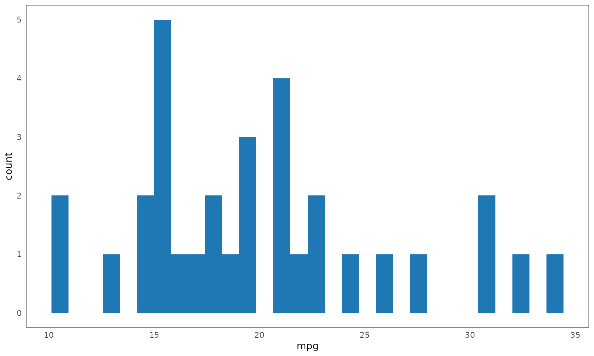
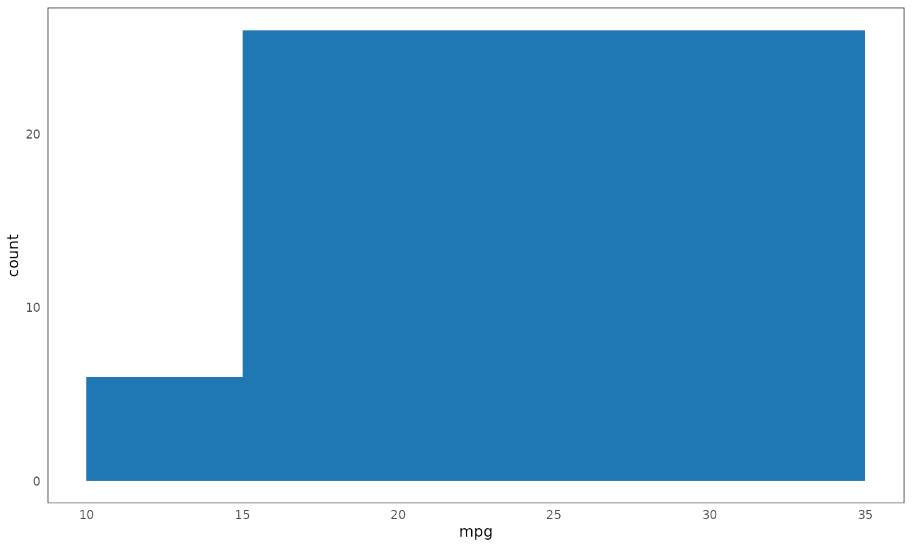

7 System description
This section contains a detailed description of the two software packages developed as part of this doctoral project: (plotscape and plotscaper):
plotscape: Written in TypeScript/JavaScript, provides a “low-level” interactive visualization framework and utilitiesplotscaper: Written in R, provides a “high-level” wrapper/API for R users
A couple of quick general notes. Firstly, the low-level platform (plotscape) was written with client-side web technology stack: JavaScript, HTML, and CSS. Web technologies provide a simple and portable platform for making interactive apps in R and have become the de facto standard, thanks to good integration via packages such as htmlwidgets (Vaidyanathan et al. 2021) and Shiny (Sievert 2020). Second, functionality was split across two packages out of practical concerns. To achieve optimal performance and fine-grained control, plotscape was implemented from scratch in TypeScript/JavaScript rather than relying on some JS-in-R wrapper library. plotscaper was then developed to provide a user-friendly R wrapper around plotscape’s functionalities.
As of the time of writing, plotscape comprises of about 6,400 significant lines of code (SLOC; un-minified, primarily TypeScript but also some CSS, includes tests, etc…), and plotscaper contains about 500 SLOC of R code (both counted using cloc). The unpacked size of all (minified) files is about 200 kilobytes for plotscape and 460 kilobytes for plotscaper, a fairly modest size compared to other interactive data visualization options for R10. Both packages have fairly minimal dependencies, which should hopefully make them easy to maintain and extend going forward.
Since the two packages address fairly well-separable concerns - high-level API design vs. low-level interactive visualization utilites - I decided to organize this section accordingly. Specifically, I first discuss general, high-level API concerns alongside plotscaper. Then I delve into the low-level implementation details alongside plotscape. There are of course cross-cutting concerns and those will be addressed towards ends of the respective sections. However, first, let’s briefly review the core requirement of the package(s).
7.1 Core requirements
To re-iterate, from Section 6, the core requirements for the high-level API (plotscaper) were:
- Facilitate creation and manipulation of interactive figures for data exploration
- Be accessible to a wide range of users with varying levels of experience
- Integrate well with popular tools within the R ecosystem
These overarching goals, explored further in Section 7.2, translated into more requirements:
- Simple and intuitive API for creating and manipulating multi-panel interactive figures (see e.g. Sections 7.2.2.1, 7.2.2.3, and 7.2.3)
- Support for interactive features such as generalized linked selection, parameter manipulation and representation switching, and other standard features like zooming, panning, and querying (discussed throughout)
- Two-way communication between figures and interactive R sessions (see Section 7.2.4)
- Static embedding capabilities for R Markdown/Quarto documents (see Section 7.2.5)
To realize these goals, it was necessary to design the low-level platform (plotscape) which could support them. The primary purpose of plotscape was to provide utilities for the interactive data visualization pipeline:
- Splitting the data into a hierarchy of partitions
- Computing and transforming summary statistics (e.g. stacking, normalizing)
- Mapping these summaries to visual encodings (e.g. x- and y-axis position, width, height, and area)
- Rendering geometric objects and auxiliary graphical elements
- Responding to user input and server requests, propagating any required updates throughout the pipeline (reactivity)
Section 7.4 focuses on the concerns surrounding these more fine-grained implementation details. Specifically, it discusses:
- The programming paradigm used in
plotscape(Section 7.4.1) - Row vs. column based data representation (Section 7.4.2)
- Reactivity (Section 7.4.3)
- Specific components of the system and their relations (Section 7.4.4)
Note that the most granular implementation details of plotscape are discussed in Section 7.4.4 (along with concrete code examples), so some readers may find it easier to start with this section.
7.2 High-level API (plotscaper)
In Section 6, I already discussed some broad, theoretical ideas related to the package’s functionality. Here, I focus more on the concrete API - what plotscaper code looks like, how are the users supposed to understand it, and why was the package designed this way. The goal is to provide a rationale for key design decisions and choices.
7.2.1 API design
As mentioned in Section 6, a primary inspiration for plotscaper’s API was the popular R package ggplot2. In ggplot2, plots are created by chaining together a series of function calls, each adding or modifying a component of an immutable plot schema:
library(ggplot2)
# Plots are created by chaining a series of function calls
ggplot(mtcars, aes(wt, mpg)) +
geom_point() + # The overloaded `+` serves as pipe operator
scale_x_continuous(limits = c(0, 10))# The ggplot() call creates an immutable plot schema
plot1 <- ggplot(mtcars, aes(wt, mpg))
names(plot1) [1] "data" "layers" "scales" "guides"
[5] "mapping" "theme" "coordinates" "facet"
[9] "plot_env" "layout" "labels" [1] 0# Adding components such as geoms or scales returns a new schema
plot2 <- ggplot(mtcars, aes(wt, mpg)) + geom_point()
names(plot2) [1] "data" "layers" "scales" "guides"
[5] "mapping" "theme" "coordinates" "facet"
[9] "plot_env" "layout" "labels" [1] 1ggplot2 is well-loved by R users, as evidenced by the package’s popularity. However, its API presents certain limitations when building interactive figures. Specifically:
- Its design primarily centers around individual plots. While facetting does make it possible to create multi-panel figures consisting of repeats of the same plot type (see
facet_wrap()andfacet_grid(), Wickham 2016), creating mixed plot-type multi-panel figures requires the use of external packages such asgridExtra(Auguie 2017) orpatchwork(Pedersen 2024). As discussed in Section 4, in interactive graphics, multi-panel figures are essential and should be considered first-class citizens. - While the immutable schema model works well for static graphics, in interactive graphics, the ability to modify an already rendered figure via code can be extremely useful. For example directly setting a histogram binwidth to a precise value via a function call offers superior control compared to using an imprecise widget such as a slider.
- Many of the
ggplot2’s core functions make heavy use of quotation and non-standard evaluation (NSE, Wickham 2019). While this style is fairly popular within the R ecosystem and does offer syntactic conciseness, it also complicates programmatic use (Wickham 2019). For instance, inggplot2, to plot all pairwise combinations of the variables in a dataframe, we cannot simply loop over their names and supply these as arguments to the defaultaesfunction - instead, we have to parse the names within the dataframe’s environment (this is what the specializedaes_stringfunction does). Again, in interactive contexts, the ability to easily manipulate figures with code is often highly useful, and this makes NSE a hindrance (more on this later).
- The package was developed before widespread adoption of the pipe operator (both
%>%frommagrittr, Bache and Wickham 2022; and the native R|>pipe, R Core Team 2024) and its use of the overloaded+operator is a noted design flaw (see Wickham, Hadley 2014).
In plotscaper, I addressed these issues as follows. First, a function-chaining approach similar to ggplot2 was adopted, however, with a focus on multi-panel figure composition. Most functions modify the entire figure, however, specialized functions with selectors can also target individual plots (see Sections 7.2.2 and 7.2.2.1. Second, to enable mutable figure modification while retaining the benefits of immutability, most functions can operate on both immutable figure schemas and references to live figures, with the operations being applied homomorphically (this will be discussed in Section 7.2.3). Finally, non-standard evaluation was avoided altogether, and functions can be composed using any valid pipe operator11.
7.2.2 Basic example
The code below shows an example of a simple interactive figure created with plotscaper. More advanced and realistic applications are shown in Section 8; this is example is only meant to provide a simple illustration:
library(plotscaper)
create_schema(mtcars) |>
add_scatterplot(c("wt", "mpg")) |>
add_barplot(c("cyl")) |>
set_scale("plot1", "x", min = 0) |>
render()
Figure 7.1: An example of a simple interactive figure in plotscaper.
We first initialize the figure schema by calling create_schema with the input data. Next, we chain a series of add_* calls, adding individual plots. Furthermore, we can manipulate attributes of individual plots by using specialized functions. For instance, in the example above, set_scale is used to set the lower x-axis limit of the scatterplot to zero. When a schema is provided as the first argument, these functions append immutable instructions to the schema, a process which will be detailed in Section 7.2.3. Finally, call to render instantiates the schema, creating an interactive figure. Several aspects of this workflow warrant further explanation which will be provided in the subsequent sections.
7.2.2.1 Figure vs. plot and selectors
First, note that, as discussed in Section 7.2.1, all plotscaper functions take as their first argument the entire figure. This differs from ggplot2 functions, which typically operate on a single plot (unless facetting is applied). Thus, the primary target of manipulation is the entire figure, rather than a single plot. This design necessitates the use of selectors for targeting individual plots, as seen in the set_scale call above. I decided to use a simple string selector for this purpose. While alternative selection strategies, such as overloading the extraction ($) operator or using a dedicated selector function were also considered, upon considering the inherent trade-offs, I decided to go with the straightforward method of string selectors. This design choice is open to being revisited in future major releases of the package.
7.2.2.2 Variable names
Second, plotscaper also uses simple string vectors to specify data variable names. This means that the function arguments are not treated as quoted symbols12. For example, we use add_scatterplot(c("x", "y", "z")) instead of add_scatterplot(c(x, y, z)). While this style requires two extra key strokes for each variable and might feel less familiar to some R users, I believe that its suitability for programmatic use makes it a worthwhile trade-off. For instance, a user of plotscaper can easily create an interactive scatterplot matrix (SPLOM) like so:
column_names <- names(mtcars)[c(1, 3, 4)]
schema <- create_schema(mtcars)
for (i in column_names) {
for (j in column_names) {
if (i == j) schema <- add_histogram(schema, c(i))
else schema <- add_scatterplot(schema, c(i, j))
}
}
schema |> render()Figure 7.2: An example of a programmatically-created scatterplot matrix (SPLOM).
While this scatterplot matrix could be also recreated with quotation/NSE using functions like substitute from base R (R Core Team 2024) or enquo from rlang (Henry and Wickham 2024), doing so requires the knowledge of quasiquotation which is part of advanced R. Many R users may be familiar with calling functions using “naked” variable names, however, actual proficiency with using quotation effectively may be less common. Furthemore, R’s NSE is a form of metaprogramming (Wickham 2019). While powerful, over-reliance on metaprogramming is often discouraged in modern developer circles, due to it potential to impact performance, safety, and readability (see e.g. Phung, Sands, and Chudnov 2009; the discussion at Handmade Hero 2025). Thus, to promote simplicity and programmatic use, I chose simple string vectors over quoted function arguments in plotscaper.
7.2.2.3 Variables and encodings
Third, note that, in plotscaper, variable names are not meant to map directly to aesthetics such as x- or y-axis position or size. In other words, unlike ggplot2, plotscaper does not try to establish a direct correspondence between original data variables and the visual encodings/aesthetics. The reasoning behind this choice is that, in many common plot types, aesthetics do not actually represent variables found in the original data, but instead derived or computed variables. Take, for instance, the following ggplot call:

Overtly, it may seem as if the aes function maps the mpg variable to the x-axis. This would be the case if, for example, geom_point had been used, however, with geom_histogram, this interpretation is incorrect. Specifically, the x-axis actually represents the left and right edges of the histogram bins, a derived variable not found in the original data. Similarly, the y-axis shows bin counts, another derived variable. Setting custom histogram breaks makes this lack of a direct correspondence even clearer:

Now it is easier to see that what gets mapped to the x-axis is not the mpg variable. Instead, it is the variable representing the histogram breaks. The mpg variable gets mapped to the plot only implicitly, as the summarized counts within the bins (the y-axis variable). Thus, in ggplot call, the semantics of aes(x = mpg, ...) are fundamentally different in geom_histogram as compared to, for example, geom_scatter.
While this lack of a direct correspondence between data and aesthetics may seem like a minor detail, it is in fact a fundamental design gap. As discussed in Section 5, ggplot2 is based on the Grammar of Graphics model (Wilkinson 2012), which centers around the idea of composing plots out of independent, modular components. The fact that the semantics of aes are tied to geoms (and stats) means that these classes of ggplot2 functions are not truly independent. This issue is even further amplified in interactive graphics. For instance, when switching the representation of histogram to spinogram, we use the same underlying data but the aesthetic mappings are completely different. The expression aes(x = mpg) would be meaningless in a spinogram, since both the x- and y-axes display binned counts - mpg only facilitates binning and is not displayed anywhere in the plot directly.
So what to do? To be perfectly frank, I have not found a perfect solution. In Section 5, I proved that, in the general case involving transformations like stacking, stats and geoms cannot be truly independent. Barring that, the problem with specifying aesthetics in plots like histograms is that, in some sense, we are putting the cart before the horse: ultimately, we want to plot derived variables, so we should specify these in the call to aes, however, we do not know what the derived variables will be before we compute them (requiring the knowledge of stats and geoms). So perhaps the schema creation process should organized in a different way. As per Section 5, we could mirror the data visualization pipeline by structuring the code like:
In broad strokes, this is how the data visualization pipeline is implemented in plotscape (see Section 7.4). However, this model does have one important downside: it does not lend itself easily to a simple declarative schema like that of ggplot2. Despite several attempts, and some partial successes (see Section 7.4.4.6.3), on the whole, I have been unsuccessful in developing a comprehensive way to specify such a schema. The difficulties stem from the hierarchical dependencies between the various pipeline stages, as well as the added complexity of integrating reactivity into the pipeline (see also Section 9.2.2).
This difficulty with declarative schemas is why I opted for the more traditional, nominal style of specifying plots in plotscaper(i.e. using functions like add_scatterplot or add_barplot). While this approach may seem less flexible, I hope I have demonstrated that the underlying limitations are not an exclusive to plotscape/plotscaper, but extend to ggplot2 and all other GoG-based data visualization systems. I have simply chosen make these limitations more explicit. If a better solution is found, it may be integrated into future releases of the package.
A final point to mention is that it could be argued that one benefit of the ggplot2 model where partitioning and aggregation logic (stats) is implicitly tied to geoms is that it makes it easier to combine several kinds of geoms in one plot. For instance, geom_histogram can be combined with geom_rug, while single-case geom_points can be combined with aggregate summaries computed via stat_summary. Ignoring the conceptual problem of non-independence discussed above, this approach works fine for static graphics, where performance is not a key concern. However, in interactive graphics, computing a separate set of summaries for each geom layer may create unnecessary computational bottlenecks. Therefore, interactive graphics may benefit from sharing aggregated data whenever possible, and this is only possible if the partitioning and aggregation steps of the data visualization pipeline are lifted out of geoms.
7.2.3 The scene and the schema
A key part of the plotscaper API is the distinction between two classes of objects representing figures: schemas and scenes. Put simply, a schema is an immutable ledger or blueprint, specifying how a figure is created, whereas a scene is a live, rendered version of the figure which can be directly interacted with. Both can be manipulated using (largely) the same set of functions, implemented as S3 methods which dispatch on the underlying class.
As shown before, schema can be created with the create_schema function:
plotscaper schema:
add-plot { type: scatter, variables: c("wt", "mpg") }
add-plot { type: bar, variables: cyl }List of 2
$ :List of 2
..$ type: chr "add-plot"
..$ data:List of 3
.. ..$ type : 'scalar' chr "scatter"
.. ..$ variables: chr [1:2] "wt" "mpg"
.. ..$ id : 'scalar' chr "f7d38c50-2960-4a0c-9180-1a09683dd5fd"
$ :List of 2
..$ type: chr "add-plot"
..$ data:List of 3
.. ..$ type : 'scalar' chr "bar"
.. ..$ variables: chr "cyl"
.. ..$ id : 'scalar' chr "50e5b5ef-cc3e-45ac-8a49-6f6db29a57cc"As you can see, the object created with create_schema is essentially just a list of messages. Modifying the schema by calling functions such as add_scatterplot or set_scale simply appends a new message to the list, similar to how objects of class ggplot are modified via the + operator (Wickham 2016). This makes schemas easy to transport (e.g. as JSON) and modify programmatically. Finally, note how rendering the schema requires an explicit call to render. This approach differs from the popular R convention of rendering implicitly via a print method; there is an important reason for this design choice which will be discussed later.
The call to render turns the schema into a live figure that can be interacted with. This happens by constructing an htmlwidgets widget (Vaidyanathan et al. 2021), which bundles up the underlying data and plotscape code (JavaScript, HTML, CSS) into a standalone document, which may be served live, such as in RStudio viewer, or statically embedded within another HTML document, such as one produced with RMarkdown. The schema messages get forwarded to the widget and applied sequentially, creating the figure.
Importantly, under this model, the schema merely records state-generating steps, not the state itself. All mutable state lives on the scene (the client-side figure). This design avoids state duplication between the R session (server) and browser-based figure (client), eliminating the need for synchronization.
While this approach deviates from the typical client-server architecture, where most of state tends to reside on the server, it is essential for achieving highly-responsive interactive graphics. Keeping state on the client reduces round-trips to the server, resulting in fast updates in response to user events. For instance, linked selection updates, triggered by mousemove events, are initiated, computed, and rendered directly on the client. This avoids the issues of server-centric frameworks like Shiny (W. Chang et al. 2024), which struggle with high-frequency interactive events like linked selection. Finally, as will be discussed below, while the R session (server) may occasionally send and receive messages, these are less latency-critical, making a “thin” server perfectly viable.
7.2.4 Client-server communication
When inside an interactive R session, creating a plotscaper figure via the call to render also automatically launches a WebSockets server (using the httpuv package, Cheng et al. 2024), supporting a live, two-way communication between the R session (server) and the figure (client). By assigning the output of the render to a variable, users can save a handle to the server, which can then be used to call methods to modify the figure or query its state. For instance:
# The code below is used for illustration and NOT EVALUATED:
# it can only be run in interactive R sessions,
# not static documents such as this thesis
scene <- create_schema(mtcars) |>
add_scatterplot(c("wt", "mpg")) |>
add_barplot("cyl") |>
render()
# Render the scene
scene
# Add a histogram, modifying the figure in-place
scene |> add_histogram("disp")
# Set the scatterplot's lower x-axis limit to 0 (also in-place)
scene |> set_scale("plot1", "x", min = 0)
# Select cases corresponding to rows 1 to 10
scene |> select_cases(1:10)
# Query selected cases retuning a numeric vector
scene |> selected_cases() # [1] 1 2 3 4 5 6 7 8 9 10As noted earlier, most plotscaper functions are polymorphic S3 methods which dispatch on either a schema or a scene. When called dispatched on a schema, they simply append a message, whereas when dispatched on a scene, they send a WebSockets request, which may either cause a live-update or have the client respond with data (while interactive R session). More abstractly, the render function and other methods are a functor/homomorphism, meaning that they preserve composition - we can either first dispatch on a schema and then render, or render and then dispatch on the scene, and the result will be the same (provided no other interaction happens in the meantime). The one exception to this rule are state-querying functions such as selected_cases, assigned_cases, and get_scale. These retrieve the figure’s state and so make little sense to dispatch on the schema13.
7.2.5 HTML embedding
As htmlwidgets widgets, plotscaper figures are essentially webpages. As such, they can be statically embedded in HTML documents such as those produced by RMarkdown (Allaire et al. 2024) or Quarto (Allaire and Dervieux 2024). More specifically, when a plotscaper figure is rendered, htmlwidgets (Vaidyanathan et al. 2021) is used to bundle the underlying HTML, CSS and JavaScript. The resulting widget can then be embedded in any valid HTML document, or saved as a standalone HTML file (using the htlwidgets::saveWidget).14
As mentioned above, since client-server communication requires an active server, statically rendered figures do not support code-based interaction (described in Section 7.2.4). However, since within-figure interactive features such as linked selection and querying are entirely client-side, they are always available, even in static documents. This makes plotscaper a good fit for interactive reports, such as those created by RMarkdown (Allaire et al. 2024) or Quarto (Allaire and Dervieux 2024).
7.3 Overview of the system model
In Section 5, I outlined key concerns that arise when designing interactive data visualization systems, and laid out a rough sketch of the interactive data visualization pipeline and the components it must contain. Here, I will give a broad overview of the implementation of this pipeline in plotscape. I will also begin relating this pipeline to core plotscape components, which will be discussed in more depth later, in Section 7.4.4. Finally, as it is one of the core topics of the present thesis, I will end with a brief discussion of the problem of hierarchical data summaries, in which I will re-iterate some key points from Section 5, discuss the constraints they provide for aggregation, transformation, and encoding, and link these to their implementation in plotscape.
7.3.1 The interactive data visualization pipeline
Figure 7.3 summarizes the interactive data visualization pipeline as implemented in plotscape/plotscaper:
Figure 7.3: A diagram of the interactive data visualization pipeline.
This pipeline describes the data flow that takes places in a single interactive plot. Importantly, the core part of the pipeline is the following (linear) chain of transformations:
\[\text{data} \to \text{partitions} \to \text{summaries} \to \text{encodings}\]
Specifically, as discussed throughout Section 5, data is first divided into a hierarchy of partitions, which are then aggregated and turned into sets of summaries. These summaries are then transformed and mapped to aesthetic encodings, which are finally rendered as geometric objects (and also used to train the plots’ scales, among other things).
Interactivity can enter the pipeline in several places. The deepest level of interaction involves the Marker, a shared data structure that manages linked selection across multiple plots. When a user engages in linked selection, the Marker updates, triggering a recalculation of data partitions, summaries, and aesthetic encodings. This essentially means the entire pipeline needs to be recomputed. Similarly, altering partitioning parameters like histogram binwidth also leads to the same “deep” cascade of updates. A somewhat less deep interaction is representation switching. This merely updates the mapping between summaries and aesthetic encodings without necessitating updates to data partitions or the summaries themselves. Finally, the most superficial updates are those involving scales. These do not affect the underlying data at all.
This is a greatly simplified model, however, it does highlight some key features. First, the model allow us to reason about the computational complexity of reactive updates. Updates tend to be the most expensive when they are deep within the pipeline, and as they move “closer to the surface”, their cost progressively decreases. For instance, updates to the data, Marker, or the partitions require significant recomputation, whereas direct scale updates typically have a fairly isolated impact, affecting the rendered output only. Further, the model also allows us to reason about the complexity of yet-to-be-implemented features. For instance, while, right now, there are no direct interactive updates of summaries (note the absence of an arrow between User Input and Summaries in Figure 7.3), we could imagine extending the system, such that, for example, we may summarize the data by computing the sum of top \(n\) values, with \(n\) being a reactive parameter. Then, the complexity of such updates would fall between modifying partitions and switching representations.
Second, as discussed throughout Section 5, although the different stages of the pipeline are fairly self-contained, they are not fully independent. At times, the more superficial stages may require information from the deeper levels. For instance, while stacking takes place during the Aesthetic Encoding step of the pipeline, it is not just a graphical operation; it relies on the information about how the summary statistics have been aggregated (see also Section 5.2). Likewise, at times, we may want to use the neutral element from summarization as the lower limit of the y-axis scale (see Section 5.2.2.10.3). Finally, during querying, while we may superficially work with geometric objects and their aesthetic encodings, we actually want to display the raw, untransformed summary statistics (Summaries). Therefore, throughout the pipeline, it is crucial to retain appropriate metadata and backlinks for use in later stages.
Now I will briefly outline the core software components of plotscape, in more concrete terms. First, I will describe the components the fundamental unit of the system, which is a figure made up of multiple plots: the Scene. Then, I will discuss the components which make up individual plots. This overview will be fairly conceptual and the individual components will be discussed in more detail in Section 7.4.4.
7.3.2 Scene model
As discussed in Section 7.2, every plotscape/plotscaper figure is composed of one or more interactive plots. Thus, the central component is the so-called Scene which represents the entire figure containing the plots (see Figure 7.4). To support linked selection (which affects all plots simultaneously), the scene contains a specialized Marker object. For communication with an external server (R client), a (WebSockets) client object is also included. Lastly, the Scene contains15 an event listener object which coordinates user input and interactions between other components. The relations between the various components are described by the following diagram:
Figure 7.4: Diagram of a scene. Solid arrows indicate composition, dashed arrows indicate other kinds of relationships (e.g. event-dispatch, argument passing in method calls).
7.3.3 Plot model
Further, every plotscape/plotscaper plot is also composed of several different, related components (see Figure 7.5). First, in light of Section 7.3.1, there are some components which are directly related to the data visualization pipeline. The data is aggregated into a hierarchy of Summaries, composed of special reduced variables or Reduceds. These reduced variables are not simple “flat” arrays of values, but contain aggregation metadata (Factors and Reducers), as well as pointers to the parent-level values, enabling hierarchy-aware transformations such as stacking or normalization (e.g. in spineplot, see e.g. Section 4.2.5.7). The aggregated summaries are translated into aesthetic encodings and used to train the plot Scales, which are composed of domain and codomain objects of the type (Expanse). The translated summaries are also mapped to geometric objects or geoms, which are used in rendering and collision-detection (in linked selection). User input and scene events are again handled by an event listener object. Finally, the data-representing geoms, as well as other, auxiliary kinds of graphical objects (e.g. axis labels/titles) are rendered as visual output.
Figure 7.5: Diagram of a plotscape plot. Solid arrows indicate composition, dashed arrows indicate other kinds of relationships (e.g. event-dispatch, argument passing in method calls).
7.3.4 Hierarchical data summaries: computation, transformation, and encoding
As discussed in Section 5.1.4, a core problem in the design of interactive data visualization systems supporting linked selection is the presence of hierarchical dependencies within the represented data. Specifically, to draw objects composed of parts, and apply transformations such as stacking and normalization (see Section 5.2.2.10), it is necessary to encode the hierarchical relationships in the data. However, coming up with a convenient API for describing these relationships is not simple, and so I would like to spend a bit more time discussing it here.
As discussed in Section 5.1.4, rendering certain kinds of plots composed of geometric objects with highlighted parts representing selection requires a tree-like structure (see e.g. Figure 5.10). In other words, our system needs to be able to represent a hierarchy of connected data tables of the following shape:
Figure 7.6: A diagram of the data partition hierarchy.
To give a more concrete example, consider the summary statistics we need to compute to draw a spineplot (see e.g. Section 4.2.5.7). We may initially consider computing a simple table of summaries computed over the product of two partitioning variables:
| cyl | am | mpg |
|---|---|---|
| 4 | 0 | 68.7 |
| 6 | 0 | 76.5 |
| 8 | 0 | 180.6 |
| 4 | 1 | 224.6 |
| 6 | 1 | 61.7 |
| 8 | 1 | 30.8 |
However, such a simple, “flat” table of summaries is not enough. To compute the heights of the normalized bar segments, we also require parent-level data. One way to add this information is via a join operation (specifically, a left outer join, see Codd 1970):
Example 7.1 (Naive aggregation for spineplot)
parent_data <- aggregate(mpg ~ cyl, FUN = sum, data = mtcars)
child_data <- aggregate(mpg ~ cyl + am, FUN = sum, data = mtcars)
child_data |>
# Join parent-level data
merge(parent_data, by = "cyl", all.x = TRUE) |>
# Compute transformations
within({
# Ignores the issue of order
stacked <- as.numeric(sapply(split(mpg.x, cyl), cumsum))
normalized <- mpg.x / mpg.y
stacked_and_normalized <- stacked / mpg.y
}) |>
# Reorder
subset(select = c("stacked", "normalized",
"stacked_and_normalized")) |>
knitr::kable()| stacked | normalized | stacked_and_normalized |
|---|---|---|
| 68.7 | 0.2342312 | 0.2342312 |
| 293.3 | 0.7657688 | 1.0000000 |
| 76.5 | 0.5535456 | 0.5535456 |
| 138.2 | 0.4464544 | 1.0000000 |
| 180.6 | 0.8543046 | 0.8543046 |
| 211.4 | 0.1456954 | 1.0000000 |
7.3.4.1 Problems with naive joins
The code in Example 7.1 may seem like a reasonable way to compute the summary data for a spineplot, however, it has a couple of important issues. First, the example models the hierarchical relationship inherent to spineplots (as well as other types of plots, see Section 5.1.3.3) only implicitly. Specifically, there is nothing in the first two lines of Example 7.1 to indicate that the two aggregated data sets are related. The user may know that parent_data and child_data are hierarchically related, however, in the context of the program, these are two independent variables. This approach is suboptimal and error-prone: a better solution may be to encode the hierarchical relationship explicitly, into the data structure itself.
Second, the naive join method needlessly duplicates information. We want to compute a consistent set of summaries over different levels of granularity, and, as such, most of the code in the first two lines of Example 7.1 is redundant. Specifically, the only thing that changes are the partitioning variables on the right hand side of the formula (i.e. ~ cyl and ~ cyl + am). Further, since we create the hierarchy of partitions by taking repeated products of the partitioning variables, specifying each level of partitioning explicitly is redundant: we can simply specify the partitioning variables in order and let the system take the products implicitly (i.e. instead of ~ cyl and ~ cyl + am, we can simply specify cyl and am). Finally, when joining the two aggregated data sets (via merge), we have to create new columns and rename existing ones (e.g. see the columns mpg.x and mpg.y in the output of Example 7.1). This solution can lead to name clashes and also creates unnecessary memory allocations, since the parent-level data has to be repeated for each level of the child partition.
Third, the naive join method does not preserve the appropriate metadata. Specifically, the output of the aggregate function is a simple dataframe, with the aggregated summaries being just a simple numeric column. However, as I argued throughout Section 5 (in particular, Section 5.2.1.2), to correctly apply operations like stacking, we need to know how the summaries have been computed. Therefore, it is essential to preserve metadata about the summarizing function, as well as the partition over which the result has been computed.
Fourth and final, at times, it may be useful to compute multiple different summary statistics across several different variables. This is not possible with the aggregate function, which takes a single FUN which specifies the summary function (sum) applied to the left-hand side of the formula (mpg). However, to allow for a diverse range of graphics, it may be useful to be able to compute multiple kinds of summaries across the same partitioning scheme, similar to how we can specify multiple aggregation functions within a single SQL SELECT statement (Codd 1970). This could be useful, for example, if we want to map one summary to a barplot bars’ heights and a different summary to the bars’ widths.
7.3.4.2 Solution: Computing summaries in one go
Altogether, I argue that a more effective way to describe the hierarchical summarization process underlying many types of plots is a single operation (function call). This operation takes as its inputs a set of summary statistics to compute and a list of partitions to compute them over, and returns a list of aggregated data sets. To give a simplified example, note the following pseudo-code:
compute(
data = mtcars,
partition_by = c(cyl, am),
summaries = list(stat1 = sum(mpg), stat2 = max(wt))
)This approach has several key benefits. First, it automatically and concisely encodes the hierarchical structure. By specifying a list of partitioning variables, we can let the system take the partition products and link the different levels together. Second, by specifying a list/dictionary of summaries, we can append the function that has been used to compute the summary function as metadata to the result. For instance, within the body of the compute function, we could append the appropriate metadata as follows:
attr(result$stat1, "reducer") <- list(
summaryfn = sum,
initialfn = function() 0
)
attr(result$stat2, "reducer") <- list(
summaryfn = max,
initialfn = function() -Inf
)This gets to the idea of reduced variables and reducers, which will be discussed in more depth in Section 7.4.4.6.
7.3.4.3 Encoding summaries
After we have computed a hierarchy of summaries (via some hypothetical function like compute), we are left with a list of data sets which represent summaries encoded at different levels of aggregation or granularity. We can then easily map these data sets to aesthetic encodings and apply transformations like stacking (since the aggregated variables contain metadata about how they have been computed). Further, an important thing to note is that the data sets computed at different levels of partitioning can be encoded in different ways and used for different purposes. For instance, for many types of aggregate plots, the most granular data set can be used to encode object segments, which will be rendered via the graphical device, whereas a less granular data set may be used to encode object boundaries, which can be used to train scales and for collision detection during linked selection.
For instance, the following code describes how we may compute and encode data for a barplot:
summarized_data <- compute(
data = mtcars,
partition_by = c(cyl, am),
summaries = list(stat = sum(mpg))
)
# Computed over cyl
barplot_object_data <- encode(
summarized_data[1],
encodings = list(x = cyl, y = 0, width = 1, height = stat)
)
# Computed over product of cyl and am
barplot_segment_data <- encode(
summarized_data[2],
encodings = list(x = cyl, y = 0, width = 1,
height = stack(stat))
)The encoded_object_data data set represents the whole barplot bars and may be used for training scales and collision detection, while the encoded_segment_data data set represents the more granular bar segments, which are actually rendered. Notice how the stack function is only applied to the segment data, since this represents the finest level of partitioning.
In some way, this is similar to how data variables are mapped to aesthetics in ggplot2 using the aes() function (Wickham 2016). However, as discussed in Section 7.3.1, an important difference is that in ggplot2, the aesthetic mapping occurs before the variables are summarized, making the data dependencies more explicit and also making certain interactive operations more efficient. Specifically, separating the summary and encoding step enables simple and efficient representation switching. For instance, to turn the barplot into a spineplot, we could use the same summary data and simply swap the encoding scheme:
7.4 Low-level implementation (plotscape)
This section describes the actual platform used to produce and manipulate interactive figures, as implemented in plotscape. I begin with the discussion of some broader concerns, specifically the choice of programming paradigm (Section 7.4.1), data representation (Section 7.4.2), and reactivity model (Section 7.4.3. Finally, I provide a detailed listing of the system’s components and their functionality (Section 7.4.4). Some readers may find it easier to start with Section 7.4.4, as this presents the most concrete information.
Key concepts are explained via example code chunks. All are valid TypeScript code, and many are even evaluated, using the Bun TypeScript/JavaScript runtime (“Bun” 2025). The reason why TypeScript was chosen over R for these examples is that explicit type signatures make many of the concepts much easier to explain. Further, since plotscape is written in TypeScript, many of the examples are taken almost directly from the codebase (with minor adjustments for sake of consistency and conciseness).
7.4.1 Programming paradigm
The first broad issue worth briefly discussing is the choice of programming paradigm for plotscape. In Section 7.2, I intentionally omitted discussions of this issue since the material was fairly high level. However, since I will now start delving into implementation details, I believe it it important to give the topic of programming paradigms a brief consideration.
Broadly speaking, a programming paradigm is a set of rules for reasoning about the structure of computer programs, offering guidelines and conventions about common programming concerns, such as data representation, code organization, and control flow. Importantly, while many languages lean towards a single paradigm (see e.g. Van Roy et al. 2009), the languages two I chose for my implementation of plotscape/plotscaper - JavaScript/TypeScript and R - are both multi-paradigm (Chambers 2014; MDN 2024e). As C-inspired languages, they both support classical procedural programming. Further, thanks to first-class function support, they also allow for functional programming style (Chambers 2014; MDN 2024c). Finally, they also support object-oriented programming, via prototype inheritance in the case of JavaScript (MDN 2024b) and the S3, S4, and R6 object systems in the case of R (Wickham 2019). This multiparadigm nature of R and JavaScript made it possible for me to experiment with several approaches.
In the following subsections, I will briefly outline four programming paradigms: object-oriented, functional, and data-oriented programming. I will discuss their key features, trade-offs, and suitability for interactive data visualization systems. Finally, I will provide a rationale for my choice of programming paradigm and discuss my specific use of it in plotscape.
7.4.1.1 Procedural programming
Procedural programming, also known as imperative programming16, is perhaps the oldest and most widely-known programming paradigm. Formalized by John Von Neumann in 1945 (Von Neumann 1993; for a review, see Knuth 1970; Eigenmann and Lilja 1998), it fundamentally views programs as linear sequences of discrete operations modifying some mutable state (Frame and Coffey 2014). While these operations can be grouped into functions or procedures to build larger programs, the core organization remains sequential. This approach closely mirrors how programs are executed on the underlying hardware (most CPUs execute instructions sequentially, beyond some advanced techniques such as branch prediction and speculative execution, see e.g. Parihar 2015; Raghavan, Shachnai, and Yaniv 1998).
Compared to the other programming paradigms discussed below, procedural programming is generally a lot less opinionated. It primarily serves as a framework for classifying basic programming constructs like variables, functions, and loops, offering little guidance on best practices or how to structure programs. Because most programming languages include at least some procedural constructs, many programs are, as a consequence, at least partly procedural.
As for the suitability of procedural programming for interactive data visualization, there are some pros and cons. Since programs written in procedural style map fairly closely onto CPU instructions, they tend to be, in general, highly performant; for example, it is generally considered good practice to use procedural (imperative) code in performance-critical “hot” code paths such as large loops (see e.g. Acton 2014). However, a purely procedural style can introduce challenges when developing larger systems. Because this style imposes few restrictions on the program structure, it can, without careful management, lead to code complex and hard-to-extend code.
7.4.1.2 Functional programming
Functional programming is another fairly well-known and mature programming paradigm. With roots in the lambda calculus of Alonzo Church (Church 1936, 1940; for a brief overview, see e.g. Abelson and Sussman 2022; Lonsdorf 2025), the central idea of functional programming is function composition. Programs are built from pure functions without side-effects, which operate on immutable data. Further, functions are treated as first-class citizens, allowing functions to take other functions as arguments or return them (leading to “higher-order functions”). Ultimately, under this paradigm, programs are modeled as data pipelines, transforming input to output without altering mutable state.
A key benefit of the functional approach is referential transparency (see e.g. Abelson and Sussman 2022; Lonsdorf 2025; Milewski 2018; Stepanov and McJones 2009). Because pure functions have no side effects, expressions can always be substituted with their values and vice versa. For instance, just as the expression 1 + 2 can always be replaced by the value 3, so can the call to the function function add(x, y) { return x + y; } be replaced with the expression x + y. This property is incredibly useful as it allows us to reason about individual functions in isolation, without needing to consider the program’s state. However, referential transparency only holds as long as the function does not modify any mutable state; assigning to non-local variables or performing I/O operations breaks this property, forcing us to consider the program’s state.
Relevant to this thesis, functional programming also has close ties to mathematics, particularly category theory (see Milewski 2018). Many algebraic concepts discussed in Section 5 – including preorders, functors, and monoids – have direct counterparts in functional programming. More specifically, these are often implemented as polymorphic type classes: for instance, in Haskell (Haskell.org 1970), users can define an arbitrary monoid type class which then supports list aggregation (HaskellWiki 2019).
As before, when it comes to interactive data visualization, functional programming presents some key trade-offs. While properties like referential transparency are attractive, all data visualization systems must ultimately manage mutable state, specifically the graphical device. User interaction introduces further complexity which is challenging to model in a purely functional manner (although it is certainly possible; see Section 7.4.3.2). This might explain why purely functional interactive data visualization libraries are scarce, despite the presence of functional libraries for static visualization (see e.g. Petricek 2021). Nevertheless, many functional programming concepts are valuable even outside of purely functional programs. For example, a system may work with mutable state while remaining largely composed of pure functions, by “separating calculating from doing” (see Normand 2021; Van Eerd 2024).
7.4.1.3 Object-oriented programming
Compared to the two previous paradigms, object oriented programming (OOP) is a more recent, yet also highly mature and widely-adopted, framework. Emerging in the late 1950’s and early 1960’s with languages like Simula and Smalltalk it grew to prominence in the 1980’s and 1990’s and eventually become an industry standard in many domains (Black 2013).
The core OOP concept is the object. Objects are self-contained units of code which own hidden, private state, exposing only a limited public interface, interacting with each other via messages (Meyer 1997). This design was directly inspired by communication patterns found in the networks of biological cells (as reported by Kay 1996, one of the creators of Smalltalk). Beyond that, concrete interpretations of OOP often differ, however, nevertheless, there are several ideas which tend to be shared across most OOP implementations.
These central ideas of OOP are: abstraction, encapsulation, polymorphism, and inheritance (Booch et al. 2008). First, abstraction means objects should be usable without the knowledge of their internals. Users should rely solely on the public interface (behavior) of an object, simplifying reasoning and reducing complexity (Black 2013; Meyer 1997). Second, encapsulation means that internal data should be kept private, and the surface area of an object should be as small as possible (Booch et al. 2008). Users should not access or depend on this hidden data (Meyer 1997). The primary goal of encapsulation is continuity, allowing developers to modify an object’s implementation without affecting the public interface (Booch et al. 2008; Meyer 1997). Third, polymorphism means that objects supporting the same operations should be interchangeable at runtime (Booch et al. 2008). Polymorphism is intended to facilitate extensibility, allowing users to construct new objects which may be integrated into an existing system. Finally, inheritance is a mechanism used for code reuse and implementing polymorphism, where objects may inherit properties and behavior from other objects.
It is also important to briefly mention the model-view-controller (MVC) architecture (see e.g. Krasner, Pope, et al. 1988; Leff and Rayfield 2001). This popular OOP pattern divides the application into three parts, where the model manages the application’s state, the view represents it graphically, and the controller orchestrates updates between the two as well as handles user input. The aim of this pattern is to encourage separation of concerns and reusability, such that, for example, one model may be displayed by several views (for example, the same data may be displayed as a graph and a table, see Krasner, Pope, et al. 1988).
Object-oriented programming (OOP) has seen widespread adoption, especially in GUIs, which might suggest it as a natural fit for interactive data visualization systems (see also Wilkinson 2012). Furthermore, the MVC architecture has been used in interactive data visualization (see e.g. Xie, Hofmann, and Cheng 2014), and OOP’s claimed benefits of continuity and extensibility appear highly attractive for library design. However, more recently, traditional OOP style has also faced some criticisms. First, while encouraging extensibility and reducing complexity via abstraction, encapsulation, and polymorphism seems attractive, real-world OOP implementations do not always achieve these goals. For instance, a common OOP practice is for objects to communicate by sending pointers to each other. This however breaks encapsulation and causes objects to become entangled, creating “incidental data structures” (Hickey 2011; Parent 2015; Will 2016). Further, by its nature, OOP heavily encourages abstraction. While good abstractions are undeniably useful, they take long time to develop. Poor abstractions tend to appear first, and, once in place, are difficult to extricate (Meyer 1997). This can lead to overly complex and bloated systems (Van Eerd 2024). Finally, OOP can also negatively impact performance. Objects frequently hold more data than any single method requires, and, to support runtime polymorphism, they must store pointers to virtual method tables. Consequently, arrays of objects almost always take up more memory than equivalent arrays of plain values, resulting in more cache misses and decreased performance (Acton 2014).
7.4.1.4 Data-oriented programming
Data-oriented programming (DOP) is a newer and less well-known programming paradigm. In fact, due to its recency, the term is used in multiple ways across different contexts, however, there are primarily two broad sets of ideas it encompasses. First, DOP sometimes refers to a more abstract paradigm, concerned with structure and organization of code. Inspired by the Clojure style of programming (Hickey 2011, 2018; Sharvit 2022; Parlog 2024), it also shares some similarities with the generic programming paradigm and value semantics popularized by Alexander Stepanov and popular the C++ community (Stepanov and McJones 2009; Stepanov 2013; Parent 2013, 2015, 2018; Van Eerd 2023; there are even some direct ties, see Van Eerd 2024). Second, DOP (or “data oriented design”, DOD) also sometimes refers to a more concrete set of optimization techniques and ideas. Originating in video-game development, these primarily tend to focus on low-level details like memory layout and CPU cache line utilization (Acton 2014; Bayliss 2022; Kelley 2023; Nikolov 2018; Fabian 2018). Interestingly, despite their distinct uses, both interpretations of “data-oriented programming” converge on many similar ideas about the structure and organization of computer programs. As such, I believe it is justified to discuss them here as a single paradigm.
The core idea of DOP is a data-first perspective: programs should be viewed as transformations of data, nothing more, nothing less (Acton 2014; Fabian 2018; Sharvit 2022). This idea has several important consequences. First, to truly elevate data to first-class status, it must be kept separate from code (behavior) (Fabian 2018; Sharvit 2022; Van Eerd 2024). It should be represented by plain data structures, composed of primitives, arrays, and dictionaries (a typical example would be JSON, Hickey 2011, 2018; Sharvit 2022), which can be trivially copied and behave like values (see Stepanov and McJones 2009; Stepanov 2013). Furthermore, it should be organized in a way that is convenient and efficient; there is no obligation for it to model abstract or real-world entities (Acton 2014; the fundamental blueprint is that of the relational model, Codd 1970; Moseley and Marks 2006; Fabian 2018). Code, on the other hand, should live inside modules composed of stateless functions (Fabian 2018; Sharvit 2022). The primary benefit of this approach is that, by keeping data and code separate, we can reason about both in isolation, without entanglement (Van Eerd 2024). It also allows us to introduce abstraction gradually, by initially relying on generic data manipulation functions (Fabian 2018; Sharvit 2022). Finally, it also enables good performance: by storing plain data values and organizing them in a suitable format (for example, structure of arrays, see Section 7.4.2), we can ensure optimal cache line utilization [Acton (2014); Fabian (2018); Kelley (2023);].
As might be apparent, data oriented programming shares some similarities with procedural and functional programming, but there are also some key differences. Compared to the lasseiz-faire approach of procedural programming, DOP tends to be a lot more opinionated about the structure of programs. Furthermore, while its focus on stateless functions might suggest a resemblance to functional programming, DOP generally does not prohibit mutation, and its emphasis on plain data over abstract behavior contrasts with the often highly abstract nature of purely functional code. As such, in my view, the ideas in DOP represent a distinct and fully-formed programming paradigm.
While DOP is a novel programming paradigm, there is a precedence for similar ideas in data visualization systems. Specifically, the popular tendency of defining plots via declarative schemas (see e.g. Section 7.2.2.3) seems to align well with DOP principles. While this generally tends to be a feature of the packages’ public facing APIs, not necessarily the implementation code, the popularity of JSON-like schemas might suggest that this style might be useful in designing data visualization packages more broadly.
7.4.1.5 Final choice of programming paradigm and rationale
Thanks to TypeScript/JavaScript (and R) being a multi-paradigm programming language, I was able to experiment with several programming paradigms. During initial prototyping, I used primarily procedural style, but I also explored some functional programming concepts. Later, I completely rewrote the package using traditional OOP style, but found some aspects of it frustrating and challenging. Particularly, with multiple communicating objects, I found it difficult to cleanly separate concerns and reason about complex interactive behavior. Eventually, I discovered DOP and ultimately settled on that style, finding that the plain data model greatly simplified a lot of the problems I had.
In my view, the primary advantage of DOP was the ability to reason about data and behavior separately. Many parts of the system, such as dataframes and scales (see Sections 7.4.4.3 and 7.4.4.7), make sense to think about as primarily composed of plain data. Modeling them this way helps avoid much of the entanglement which is arguably inherent to traditional OOP objects. Specifically, plain data structures composed of primitives, arrays, and dictionaries naturally tend to form simple tree-like structures, rather than more complex graphs with potential circular references, simplifying reasoning (Parent 2013, 2015; Van Eerd 2024)17. Further, defining behavior in pure function modules made it much easier to refactor and test. I also believe it encouraged a more conservative coding style: the requirement to pass all data explicitly as arguments, rather than relying on implicit class properties (members), made me more disciplined, by encouraging me to pass on only the necessary data and nothing more. Finally, it greatly simplified scenarios requiring double (multiple) dispatch; instead of deciding which class a method should belong to and which it should dispatch on, I could simply write a free function dispatching on both.
The only place where I found myself reverting to OOP-like idioms was in the several areas requiring polymorphism. Specifically, while for most of the system, polymorphism is pure overhead (in my opinion), for certain components like scales, the ability to dispatch based on the underlying data type is desirable. Further, giving the users the ability to extend the system by implementing their own components is of course useful. However, instead of using classes, I implemented a custom dispatch mechanism myself. While, hypothetically, traditional OOP classes may be a decent solution here, I found that maintaining consistent style with the rest of the codebase was preferable.
While I did not attempt a purely (or even largely) functional implementation of plotscape, I believe there are several reasons why it might not be the optimal choice either. First, as mentioned in Section 7.4.1.2, data visualization inherently requires dealing with significant amount of mutable state (the graphical device). Further, user interaction adds another element that is challenging to model in a purely functional style. While techniques for handling both do exist (see e.g. Abelson and Sussman 2022; Lonsdorf 2025), and so do functional programming data visualization libraries (see e.g. Petricek 2021), I personally question whether the increased complexity is worthwhile. Second, similar to OOP, a purely functional style tends to introduce a high amount of abstraction. While good abstractions are incredibly powerful, I found that, generally, refactoring poorly-organized plain data containers was much easier than refactoring abstract constructs, be they classes or higher-kinded types.
Finally, while my preference for DOP might also be partly due to the fact that, over the course of the project, I naturally improved as a programmer, I do not believe that this is the full explanation. Even after settling on DOP, I have experimented with other paradigms but consistently find myself returning to DOP. While there are of course many less-than-perfectly-tidy areas of the plotscape codebase that could be refactored, I still believe that this less programming paradigm allowed me, a solo developer with limited time, to go further and develop more features without becoming overwhelmed by inherent complexity. Therefore, I felt it necessary to explain my choice of programming paradigm.
7.4.1.6 Style used in code examples
Another part of the reason why I spent time discussing the choice of the programming paradigm used in plotscape is because it is reflected in many of the code examples used throughout the rest of this chapter. Specifically, in these examples, I typically define a data container as a TypeScript interface and a collection of related functions in a namespace of the same name. Since TypeScript transpiles to JavaScript, and all of the type information is compile-time only, type (interface) and value (namespace) overloading like this is perfectly valid.
In some ways, this interface-namespace style might seem like object-oriented programming (OOP) with extra steps, i.e. where someone might write const foo = new Foo(); const bar = foo.bar(), I write const foo = Foo.create(); const bar = Foo.bar(foo), however, there are a couple of important differences. First, unlike a class that tightly couples data and behavior, the interface-defined type is solely a data container, and the namespace is merely a container for free functions. As such, both can be reasoned about in isolation. Second, TypeScript’s structural typing enables calling the namespace functions with any variable matching the type signature, not just class instances, significantly improving code reusability. Finally, unlike classes, the interface-defined types are simple data containers without polymorphism, and this eliminates the need for dynamic dispatch (in the general case), potentially improving performance. Overall, the style aligns with the data-oriented programming principles discussed in Section 7.4.1.4.
7.4.2 Data representation: Row-oriented vs. column-oriented
Data visualization is fundamentally about the data; however, the same data can often be represented in multiple ways. This is important as different data representations have can offer different trade-offs, including ease of use and performance. In most data analytic applications, the fundamental data model is that of a two-dimensional table or dataframe. However, because computer memory is inherently one-dimensional, a choice must be made: should these tables be stored as arrays of heterogeneous records (rows) or as a dictionaries of homogeneous arrays (columns)?
In popular, in-memory data analytics applications, the column-store seems to be the prevaling model. This model organizes tables as dictionaries of columns, such that each column is a homogeneous array containing values of the same type. Unlike a matrix, however, different columns can store values of different types (e.g. floats, integers, or strings). Dataframe objects may also store optional metadata, such as row names, column labels, or grouping structures (R Core Team 2024; Bouchet-Valat and Kamiński 2023). Popular examples of this design include the S3 data.frame class in base R (R Core Team 2024), the tbl_df S3 class in the tibble package (Müller and Wickham 2023), the DataFrame class in the Python pandas (Pandas Core Team 2024), the DataFrame class in the polars (Team 2024), or the DataFrame type in the Julia DataFrame.jl package (Bouchet-Valat and Kamiński 2023).
However, there are also some fairly well-known examples of row-oriented systems. Particularly, the popular JavaScript data visualization and transformation library D3 (Mike Bostock 2022) models data frames as arrays of rows, with each row being a JavaScript object. Likewise, row-stores are also highly popular in databases, particularly in online transaction processing (OLTP) systems such as PostgreSQL, SQLite, or MySQL, where tables are generally stored as arrays of records, both in memory and on disk (see e.g. Petrov 2019; Abadi et al. 2013; Pavlo 2024).
Finally, within the broader programming context, the two data models are also known as the struct-of-arrays (SoA) and array-of-structs (AoS) layouts, corresponding roughly to the column- and row-store, respectively (see e.g. Acton 2014; Kelley 2023). Here, the distinction is a bit more nuanced, since the stored data may be interpreted as more than just plain values, making either representation more or less natural in certain programming paradigms (see Section 7.4.1). For example, in object-oriented programming (OOP), the fundamental unit of code is an object (see Section 7.4.1.3). Since objects are meant to encapsulate their properties - both data and behaviour (via a pointer to a virtual method table) - the AoS layout, which keeps object properties adjacent in memory, is the more natural choice in OOP (see e.g. Bayliss 2022).
7.4.2.1 Ease of use
When it comes to user experience, the row-oriented (AoS) model may be slightly easier for novice users; however, this difference is probably fairly minor. While many data analysis workflows involve row-oriented operations, which, in the row-oriented model, can be performed by indexing the array of rows once (rather than requiring indexing across multiple columns), many column-oriented applications also provide support for row operations, either through library functionality (e.g., pandas, Pandas Core Team 2024), or directly at the language level (e.g., R, R Core Team 2024). Furthermore, the prevalence of column-oriented workflows within the data science ecosystem means that many users will be already familiar with this layout. Therefore, on balance, I believe that, in terms of user experience, there is little difference between the two data layouts.
7.4.2.2 Performance
A key factor determining the performance of row-oriented vs. column-oriented storage is the intended use. Specifically, depending on how the store is intended to be used, one layout may provide better performance characteristics than the other.
The column-oriented (SoA) layout tends to be the more performant option for storage and operations across multiple rows, particularly aggregation (see e.g. Acton 2014; Kelley 2023; Pavlo 2024). This is due to the fact that it benefits from better memory alignment and, as a result, improved cache locality. Because all values within a column share the same size, this eliminates the need for padding, often resulting in a significantly smaller memory footprint (see e.g. Rentzsch 2005; Kelley 2023; Pavlo 2024). Furthermore, this uniform sizing also facilitates easier pre-fetching of values during column-wise operations. Specifically, the CPU can cache contiguous chunks of values, often leading to greatly improved performance for operations such as summing a long list of values (Abadi et al. 2013; Acton 2014; Kelley 2023; Pavlo 2024). This has made the column-oriented layout the preferred solution in online analytical processing (OLAP) databases (Abadi et al. 2013; Pavlo 2024).
In contrast, the row-oriented (AoS) layout performs better at single-row read and write operations. Because all values for a record are stored contiguously, they can be retrieved without needing to be fetched and assembled from disparate memory locations. Similarly, writes are faster as only a single memory location needs to be modified. These characteristics have made the row-oriented layout the traditional choice in OLTP databases (Abadi et al. 2013; Pavlo 2024).
An important point to mention is that, in high-level languages like JavaScript, the underlying memory representation may differ significantly from the apparent structure. For instance, to optimize key access, the V8 engine stores JavaScript objects (dictionaries) as “hidden classes”: essentially a pointer to the object’s shape and an array of values (Bruni 2017; V8 Core Team 2024). Nevertheless, objects are still allocated on the heap, unlike packed arrays of small integers (SMIs) or floats, which consequently tend to offer much better performance characteristics (see e.g. V8 Core Team 2017; Bruni 2017; Stange 2024).
7.4.2.3 Final choice of data representation and rationale
As an interactive data visualization system, plotscape needed to support fast data transformations. Particularly, for linked selection, efficient aggregations were key. As such, the column-oriented data layout was chosen. While this approach differs from that of the most popular web-based data visualization framework [D3, Bostock, 2022], it aligns with the majority of other data analytic languages and libraries.
7.4.3 Reactivity
A key implementation detail of all interactive applications is reactivity: how a system responds to input and propagates changes. However, despite the fact that interactive user interfaces (UIs) have been around for a long time, there still exist many different, competing approaches to handling reactivity. A particularly famous18 example of this is the web ecosystem, where new UI frameworks seem to keep emerging all the time, each offering its unique spin on reactivity (see e.g. Ollila, Mäkitalo, and Mikkonen 2022). This makes choosing the right reactivity model challenging.
Furthermore, reactivity is paramount in interactive data visualization systems due to many user interactions having cascading effects. For instance, when a user changes the binwidth of an interactive histogram, the counts within the bins need to be recomputed, which in turn means that scales may need to be updated, which in turn means that the entire figure may need to be re-rendered, and so on. Also, unlike other types of UI applications, interactive data visualizations have no upper bound on the number of UI elements - the more data the user can visualize the better. This makes efficient updates crucial. While re-rendering a button twice may not be a big deal for a simple webpage or GUI application, unnecessary re-renders of a scatterplot with tens-of-thousands of data points may cripple an interactive data visualization system.
Because of the reasons outlined above, reactivity was key concern for plotscape. While developing the package, I had evaluated and tried out several different reactivity models, before finally settling on a solution. Given the time and effort invested in this process, I believe it is valuable to give a brief overview of these models and discuss their inherent advantages and disadvantages, before presenting my chosen approach in Section 7.4.3.5.
7.4.3.1 Observer pattern
One of the simplest and most well-known methods for modeling reactivity is the Observer pattern (Gamma et al. 1995). Here’s a simple implementation:
// Observer.ts
export namespace Observer {
export function create<T>(x: T): T & Observer {
return { ...x, listeners: {} };
}
export function listen(x: Observer, event: string,
cb: () => void) {
if (!x.listeners[event]) x.listeners[event] = [];
x.listeners[event].push(cb);
}
export function dispatch(x: Observer, event: string) {
if (!x.listeners[event]) return;
for (const cb of x.listeners[event]) cb();
}
}
const person = Observer.create({ name: `Joe`, age: 25 });
Observer.listen(person, `age-increased`, () =>
console.log(`${person.name} is now ${person.age} years old.`)
);
person.age = 26;
Observer.dispatch(person, `age-increased`);Joe is now 26 years old.Internally, an Observer object stores a dictionary where the keys are the events that the object can dispatch or notify its listeners of, and values are arrays of callbacks19. Listeners listen (or “subscribe”) to specific events by adding their callbacks to the relevant array. When an event occurs, the callbacks in the appropriate array are iterated through and executed in order.
The Observer pattern easy to implement and understand, and, compared to alternatives, also tends to be fairly performant. However, a key downside is that the listeners have to subscribe to the Observer manually. In other words, whenever client code uses Observer values, it needs to be aware of this fact and subscribe to them in order to avoid becoming stale. Further, the logic for synchronizing updates has to be implemented manually as well. For instance, by default, there is no mechanism for handling dispatch order: the listeners who were subscribed earlier in the code are called first20. Moreover, shared dependencies can cause glitches and these have to be resolved manually as well. See for instance the following example:
import { Observer } from "./Observer"
function update(x: { name: string; value: number } & Observer,
value: number) {
x.value = value;
console.log(`${x.name} updated to`, x.value);
Observer.dispatch(x, `updated`);
}
const A = Observer.create({ name: `A`, value: 1 });
const B = Observer.create({ name: `B`, value: A.value * 10 });
const C = Observer.create({ name: `C`, value: A.value + B.value });
Observer.listen(A, `updated`, () => update(B, A.value * 10));
Observer.listen(A, `updated`, () => update(C, A.value + B.value));
Observer.listen(B, `updated`, () => update(C, A.value + B.value));
update(A, 2); // C will get updated twiceJoe is now 26 years old.
A updated to 2
B updated to 20
C updated to 22
C updated to 22The example above shows the so-called diamond problem in reactive programming21. We have three reactive variables A, B, and C, such that B depends on A, and C depends simultaneously on A and B. Since C depends on A and B, it has to subscribe to both. However, C is not aware of the global context of the reactive graph: it does not know that B will update any time A does. As such, an update to A will trigger two updates to C despite the fact that, intuitively, it should only cause one.
Without careful management of dependencies, this reactive graph myopia that the Observer pattern exhibits can create computational bottlenecks, particularly in high-throughput UIs such as interactive data visualizations. Consider an interactive histogram where users can either modify binwidth or directly set breaks. If both are implemented as reactive parameters, a poorly managed dependency graph (e.g., breaks dependent on binwidth, and rendering dependent on both) will result in unnecessary re-renders, impacting performance at high data volumes.
7.4.3.2 Streams
A radically different approach to reactivity is offered by streams (see e.g. Abelson and Sussman 2022). Instead of events directly modifying data state, streams separate event generation from event processing, modeling the latter as pure, primarily side-effect-free transformations. These transformations can then be composed via usual function composition to build arbitrarily complex processing logic. Finally, due to the separation between the stateful event producers and stateless event transformations, this approach aligns closely with methods such as generators/iterators as well as functional programming more broadly (Abelson and Sussman 2022; Fogus 2013), and has implementations in numerous functional programming languages and libraries, most notably the polyglot Reactive Extensions library (also known as ReactiveX, Rxteam 2024).
Consider the following implementation of a stream which produces values at 200-millisecond intervals and stops after 1 second:
function intervalSteam(milliseconds: number, stopTime: number) {
let streamfn = (x: unknown) => x;
const result = { pipe };
function pipe(fn: (x: any) => unknown) {
const oldStreamfn = streamfn;
streamfn = (x: unknown) => fn(oldStreamfn(x));
return result;
}
const startTime = Date.now();
let time = Date.now();
const interval = setInterval(() => {
time = Date.now();
const diff = time - startTime;
if (diff >= stopTime) clearInterval(interval);
streamfn(diff);
}, milliseconds);
return result;
}
const stream = intervalSteam(200, 1000)
stream
.pipe((x) => [x, Math.round((x / 7) * 100) / 100])
.pipe((x) =>
console.log(
`${x[0]} milliseconds has elapsed`
+ `(${x[1]} milliseconds in dog years)`
)
);201 milliseconds has elapsed(28.71 milliseconds in dog years)
401 milliseconds has elapsed(57.29 milliseconds in dog years)
602 milliseconds has elapsed(86 milliseconds in dog years)
803 milliseconds has elapsed(114.71 milliseconds in dog years)
1004 milliseconds has elapsed(143.43 milliseconds in dog years)As can be seen, the event producer (stream) is defined separately from the event processing logic, which is constructed by piping the result of one operation into the next. Because of the associativity of function composition, the stream actually exhibits properties of a functor, meaning that the order of composition - either through direct function composition or .pipe chaining - does not affect the result. Additionally, while the stream transformations themselves are (generally) stateless, they can still produce useful side-effects (as can be seen on the example of the console.log call above). Further, because of this fact, they also lend themselves well to modeling asynchronous or even infinite data sequences (Abelson and Sussman 2022; Fogus 2013).
While streams can be extremely useful in specific circumstances, their utility as a general model for complex UIs (beyond asynchronous operations) is debatable. Specifically, the inherent statefulness of UIs conflicts with the stateless nature of streams: stateless computations inside the stream have to leak into the rest of the application somewhere. Delineating which parts of the logic should go into streams versus which should be bound to UI components adds unnecessary complexity for little real benefit. Consequently, streams are likely not the optimal choice for interactive data visualization, where some mutable state is unavoidable.
7.4.3.3 Virtual DOM
Within the web ecosystem, a popular way of handling reactivity involves something called the virtual DOM (VDOM). This approach, popularized by web frameworks such as React (Meta 2024) and Vue (Evan You and the Vue Core Team 2024), involves constructing an independent, in-memory data structure which provides a virtual representation of the UI in the form of a tree. Reactive events are bound to nodes or “components” of this tree, and, whenever an event occurs, changes cascade throughout the VDOM, starting with the associated component and propagating down through its children. Finally, the VDOM is compared or “diffed” against the actual UI, and only the necessary updates are applied. Note that, despite being named after the web’s DOM, the VDOM represents a general concept, not tied to any specific programming environment.
The VDOM provides a straightforward solution to reactive graph challenges such as the diamond problem described in Section 7.4.3.1. It can work very well in specific circumstances, as evidenced by the massive popularity of web frameworks such as React or Vue. However, compared to alternatives, it also comes with some significant performance trade-offs. Specifically, events near the root component trigger a cascade of updates which propagates throughout a large portion of the tree, even when there is no direct dependence between these events and the child components. Moreover, since the only way for two components to share a piece of state is through their parent, the model naturally encourages a top-heavy hierarchy, further compounding the issue. Finally, depending on the nature and implementation of the UI, the diffing process may be more trouble than its worth: while in a webpage, updating a single button or a div element is a relatively fast operation, in a data visualization system, it may be more efficient to re-render an entire plot from scratch rather than trying to selectively update it.
7.4.3.4 Signals
Another approach to reactivity that has been steadily gaining traction over the recent years, particularly within the web ecosystem, are signals (also known as fine-grained reactivity). Popularized by frameworks such Knockout (knockoutjs 2019) and more recently Solid JS (Solid Core Team 2025), this approach has recently seen a wave adoptions by many other frameworks including Svelte (Rich Harris and the Svelte Core Team 2024) and Angular (Google 2025), and has even seen adoption outside of the JavaScript ecosystem, such as in the Rust-based framework Leptos (Leptos Core Team 2025).
Signal-based reactivity is built around a core pair of primitives: signals and effects. Signals are reactive values which keep track of their listeners, similar to the Observer pattern (Section 7.4.3.1). However, unlike Observers, signals do not need to be subscribed to manually. Instead, listeners automatically subscribe to signals by accessing them, which is where effects come in. Effects are side-effect-causing functions which respond to signal changes, typically by updating the UI, and play a key role in the signal-based automatic subscription model.
While signal-based reactivity might appear complex, its basic implementation is surprisingly straightforward. The following example is based on a presentation by Ryan Carniato, the creator of Solid JS (2023):
export namespace Signal {
export function create<T>(x: T): [() => T, (value: T) => void] {
// A set of listeners, similar to Observable
const listeners = new Set<() => void>();
function get(): T {
listeners.add(Effect.getCurrent());
return x;
}
function set(value: T) {
x = value;
for (const l of listeners) l();
}
// Returns a getter-setter pair
return [get, set];
}
}
export namespace Effect {
const effectStack = [] as (() => void)[]; // A stack of effects
export function getCurrent(): () => void {
return effectStack[effectStack.length - 1];
}
export function create(effectfn: () => void) {
function execute() {
effectStack.push(execute); // Pushes itself onto the stack
effectfn(); // Runs the effect
effectStack.pop(); // Pops itself off the stack
}
execute();
}
}
const [price, setPrice] = Signal.create(100);
const [tax, setTax] = Signal.create(0.15);
// Round to two decimal places
const round = (x: number) => Math.round(x * 100) / 100
const priceWithTax = () => round(price() * (1 + tax()));
// ^ Derived values automatically become signals as well
Effect.create(() =>
console.log(
`The current price is` + ` ` +
`${priceWithTax()}` + ` ` +
`(${price()} before ${tax() * 100}% tax)`
)
);
setPrice(200);
setTax(0.12);The current price is 115 (100 before 15% tax)
The current price is 230 (200 before 15% tax)
The current price is 224 (200 before 12% tax)The key detail to notice is the presence of the global stack of effects. Whenever an effect is called, it first pushes itself onto the stack. It then executes, accessing any signals it needs along the way. These signals in turn register the effect as a listener, by accessing it as the top-most element of the effect stack. When the effect is done executing, it pops itself off the stack. Now, whenever one of the accessed signals changes, the effect re-runs again. Crucially, making a derived reactive value is as simple as writing a callback: if an effect calls a function using a signal, it also automatically subscribes to that signal (see the example of priceWithTax above). Importantly, the effect subscribes only to this signal and not the derived value itself. In other words, effects only ever subscribe to the leaf nodes of the reactive graph (signals). Derived values computed on the fly (and, if necessary, can be easily memoized22), and event ordering is simply managed via the runtime call stack.
Signals provide an elegant solution to many problems with reactivity. They automate subscription to events, prevent unnecessary updates, ensure correct update order, and, due to their fine-grained nature, are generally highly performant compared to more cumbersome methods like the virtual DOM. However, again, signals do also introduce their own set of trade-offs. Chief among these, signal’s reliance on the call stack for event ordering necessitates their implementation as functions (getter-setter pairs), rather than plain data values. While techniques like object getters/setters or templating (as seen in SolidJS, Solid Core Team 2025) can be used to hide this fact, it does nevertheless add an extra layer of complexity. Similarly, many features important for performance, like memoization and batching, also require treating signals as distinct from plain data. Having code consist of two sets of entities - plain data and signals - ultimately impacts developer ergonomics.
7.4.3.5 Reactivity in plotscape and final thoughts
At the start of the project, I had used the Observer pattern for modeling reactivity. However, I had the idea of letting the users to define reactive parameters that could be used at arbitrary points in the data visualization pipeline. This had led me to explore the various models of reactivity described above, and even do a full rewrite of plotscape with signals at one point.
However, eventually, I ended up reverting back to the Observer pattern. The primary reason was developer ergonomics. While many properties of signals like the automatic event subscription were appealing, the need to manage both data and signals as distinct entities proved cumbersome. Specifically, deciding which components of my system and their properties should be plain data versus signals added an additional overhead and complicated refactoring. With a bit of practice and careful design, I found that I was able to use the Observer pattern without introducing unnecessary re-renders. Moreover, I also found that, in the interactive data visualization pipeline, reactivity can be aligned with the four discrete stages: partitioning, aggregation, scaling, and rendering. Specifically, reactive values can be introduced in batch right at the start of each of these four steps, greatly simplifying the reactive graph. Introducing reactivity at other points seem to offer limited practical benefit. Thus, despite the limitations of the Observer pattern, the structured nature of the problem (interactive data visualization pipelines) ultimately makes it a decent solution in my eyes.
7.4.4 System components
This section discusses the core components of plotscape, detailing their functionality, implementation, and interconnections. The goal is to give an overview and provide a rationale for the design of key parts of the system. As before, TypeScript code examples are provided, and, in general, these map fairly closely to the real codebase.
7.4.4.1 Indexable
One of the fundamental considerations when implementing a data visualization system is how to represent a data variable: a generalized sequence of related values. Clearly, the ability to handle fixed-length arrays is essential, however, we may also want to be able to treat constants or derived values as variables. To give an example, in a typical barplot, the y-axis base is a constant, typically zero. While we could hypothetically append an array of zeroes to our data, it is much more convenient and memory efficient to simply use a constant (0) or a callback/thunk (() => 0). Similarly, at times, arrays of repeated values can be more optimally represented as two arrays: a short array of “labels” and a long array of integer indices (i.e. what base R’s factor class does). Thus, representing data effectively calls for a generalization of a data “column” which can encompass data types beyond fixed-length arrays.
The type Indexable<T> represents such a generalization of a data column. It is simply a union of three simple types:
In plain words, an Indexable<T> can be one of the following three objects:
- A simple (scalar) value
T - A fixed-length array of
T’s (T[]) - A function which takes an index as an argument and returns a
T
That is, Indexables generalize arrays, providing value access via an index. Arrays behave as expected, scalar values are always returned regardless of the index, and functions are invoked with the index as the first argument (this functionality is provided by Getters). As a final note, Indexables are somewhat similar to Leland Wilkinson’s idea of data functions (see Wilkinson 2012, 42), although there are some differences (Wilkinson’s data functions are defined more broadly).
7.4.4.2 Getter
A Getter<T> is used to provide a uniform interface to accessing values from an Indexable<T>. It is simply a function which takes an index and returns a value of type T. To construct a Getter<T>, we take an Indexable<T> and dispatch on the underlying subtype. For illustration purposes, here is a simplified implementation:
// Getter.ts
export type Getter<T> = (index: number) => T;
export namespace Getter {
export function create<T>(x: Indexable<T>): Getter<T> {
if (typeof x === `function`) return x;
else if (Array.isArray(x)) return (index: number) => x[index];
else return () => x;
}
}we can then create and use Getters like so:
import { Getter } from "./Getter"
const getter1 = Getter.create([1, 2, 3])
const getter2 = Getter.create(99);
const getter3 = Getter.create((index: number) => index - 1);
console.log(getter1(0));
console.log(getter2(0));
console.log(getter3(0));1
99
-1Note that, by definition, every Getter<T> is also automatically an Indexable<T> (since it is a function of the form (index: number) => T). This means that we can use Getters to create new Getters. There are also several utility functions for working with Getters. The first is Getter.constant which takes in a value T and returns a thunk returning T (i.e. () => T). This is useful, for example, when T is an array and we always want to return the whole array (not just a single element):
import { Getter } from "./Getter"
const getter4 = Getter.constant([`A`, `B`, `C`])
console.log(getter4(0))
console.log(getter4(1))[ "A", "B", "C" ]
[ "A", "B", "C" ]Another useful utility function is Getter.proxy, which takes a Getter and an array of indices as input and returns a new Getter which routes the access to the original values through the indices:
import { Getter } from "./Getter"
const getter5 = Getter.proxy([`A`, `B`, `C`], [2, 1, 1, 0, 0, 0]);
console.log([0, 1, 2, 3, 4, 5].map(getter5))[ "C", "B", "B", "A", "A", "A" ]This function becomes particularly useful when implementing other data structures such as Factors.
7.4.4.3 Dataframe
In many data analytic workflows, a fundamental data structure is that of a two-dimensional table or dataframe. As discussed in Section 7.4.2, we can represent this data structure as either a dictionary of columns or a list of rows, with the column-wise representation having some advantages for analytical workflows. As such, in plotscape, I chose to represent Dataframe as a dictionary columns. Furthermore, in plotscape, a key difference is that all columns are not required to be fixed-length arrays; instead, they can be any Indexables:
For example, here’s how a plotscape data set can look like:
import { Dataframe } from "./Dataframe"
const data = {
name: [`john`, `jenny`, `michael`],
age: [17, 24, 21],
isStudent: true,
canDrive: (index: number) => data.age[index] > 18,
};
console.log(Dataframe.rows(data))[
{
name: "john",
age: 17,
isStudent: true,
canDrive: false,
}, {
name: "jenny",
age: 24,
isStudent: true,
canDrive: true,
}, {
name: "michael",
age: 21,
isStudent: true,
canDrive: true,
}
]It is important to mention that, typically, it is not necessary to materialize individual rows like the in example above; I used Dataframe.rows helper function23 to simply better visualize the implied structure of the data.
One other important thing to mention is that, since the Dataframe columns can be different Indexable subtypes, we need to make sure that we can actually find the number of rows and that these do not conflict across columns. That, at least one column needs to be a fixed-length array, and all fixed-length arrays in the data need to have the same length (or that the variable-length columns carry appropriate metadata).
In a classical OOP style, these length constraints might be enforced by a class invariant, however, plotscape adopts a looser approach. The length constraints are checked dynamically, at runtime, whenever the integrity of a Dataframe becomes a key concern, for instance, when initializing a Scene or rendering. This loose approach is more in line with JavaScript’s dynamic nature: in JavaScript, everything except for primitives is a mutable object, which may be manipulated at runtime (even class instances). As such, this approach is safer. Furthermore, with Dataframes of typical dimensionality (fewer columns than rows, \(p << n\)), the performance cost of checking column’s length is usually negligible when compared to row-wise operations, such as computing summary statistics or rendering. If performance were to become an issue for high-dimensional datasets (\(p >> n\)), the approach could always be made more efficient, for example, with memoization.
7.4.4.4 Factors
As discussed in Section 5, when visualizing, we often need to split our data into a set of disjoint subsets, representing data partitions. Further, as mentioned in Section 5.1.4, these partitions may be organized hierarchically, such that multiple subsets in one partition may be combined together to form another subset within a coarser, parent partition.
Factors provide a way to represent such data partitions and the associated metadata. They are similar to base R’s factor S3 class, although there are some important differences (which will be discussed below). Factor has the following interface:
interface Factor<T extends Dataframe> {
cardinality: number;
indices: number[];
parent?: Factor;
data: T
}Here, cardinality represents the number of unique parts that the factor/partition represents (e.g. 2 for a binary variable, 3 for a categorical variable with 3 levels, and so on). Data points or cases map to the parts via a dense array of indices, which take on values in 0 ... cardinality - 1 and have length equal to the length of the data24. Each case is identified by its position in the array. For example, take the following array of indices:
Keeping in mind JavaScript’s zero-based indexing, these indices identify the first part/level (0) as consisting of cases one, four, and six, the second part (1) as consisting of cases two and three, and the third part (2) as consisting of only a single case - five.
The data associated with factor’s levels is stored in the data property, which is composed of arrays/Indexables, with length as the factor’s cardinality. For instance, if a factor is created from a categorical variable with three levels - A, B, and C - then data may look something like this:
Finally, the optional parent property is a pointer to the factor representing the parent partition.
There are a couple of important things to discuss. First, cardinality technically duplicates information, since it is simply the number of unique values in indices. However, for many operations on Factors, it is beneficial to be able to quickly access cardinality, in constant \(O(1)\) time. Such is the case, for example, when constructing product factors or when initializing arrays of summaries. Of course, this means that the relationship between cardinality and indices is an invariant that has to be maintained under any factor transformations.
Second, the metadata associated with the parts is stored in the data property of type Dataframe. This represents a departure from e.g. base R’s factor class, where all metadata is stored as a flat vector of levels (which may be tuples). For instance:
[1] (0,5] (0,5] (0,5] (0,5] (0,5] (5,10] (5,10] (5,10]
[9] (5,10] (5,10]
Levels: (0,5] (5,10]With Factor, the same information would be represented as:
const factor: Factor = {
cardinality: 2,
indices: [0, 0, 0, 0, 0, 1, 1, 1, 1, 1],
data: {
binMin: [0, 5],
binMax: [5, 10],
},
};I contend that, compared to a flat vector/array, storing Factor metadata in a Dataframe offers several distinct advantages. First, when partitioning data, we often want to store multiple metadata attributes. For instance, when binning numeric variable (as in the example above), we want to store the lower and upper bound of each bin. The approach used in cut is to store multiple (two) pieces of metadata as a tuple, however, this becomes cumbersome as the dimensionality of the metadata grows. Further, if metadata is stored in a Dataframe, it becomes far easier to combine when taking a product of two factors. Since factor product is a fundamental operation in plotscape, underpinning features such as linked brushing, I argue that it is sensible to store metadata on Factor in a full Dataframe form.
Finally, while all Factors share the same fundamental structure - a data partition with associated metadata - factors can be created using various constructor functions. These constructor functions differ in what data they take as input and what metadata they store on the ouput, giving rise to several distinct Factor subtypes. These will be the subject of the next few sections.
7.4.4.4.1 Bijection and constant factors
Factor.bijection and Factor.constant are two fairly trival factor constructors. Factor.bijection creates the finest possible data partition by assigning every case its own part/level, whereas Factor.constant does the opposite by assigning all cases to a single part/level. The names reflect the mathematical index mapping functions: the bijective function \(f(i) = i\) for Factor.bijection and the constant function \(f(i) = 0\) for Factor.constant. Consequently, the cardinality of Factor.bijection is always equal to the length of the data, while the cardinality of Factor.constant is always one. Both can be assigned arbitrary metadata (which must have length equal to the cardinality).
The two factor constructor functions have the same signature:
function bijection<T extends Dataframe>(n: number, data?: T):
Factor<T>
function constant<T extends Dataframe>(n: number, data?: T):
Factor<T> In either case, n represents the length of the data (the number of cases), and data represents some arbitrary metadata, of equal length as n. The variable n is used to construct an array of indices, which in the case of Factor.bijection is an increasing sequence starting at zero ([0, 1, 2, 3, ..., n - 1]), whereas in the case of Factor.constant it is simply an array of zeroes ([0, 0, 0, 0, ..., 0]).
Technically, storing explicit arrays of indices is not strictly necessary, and we could implement much of the same functionality via a callback (i.e. (index: number) => index for Factor.bijection and (index: number) => 0 for Factor.constant). However, for many operations involving factors, the length of the data (n) is also important. While it would be possible to define a separate n/length property on Factor, I found it more straightforward to simply allocate the corresponding array. While this does incur a small memory cost, there is no computational overhead, since, by definition, partitions represented by bijective or constant factors do not change25.
While fairly trivial, Factor.bijection and Factor.constant have important use cases. Factor.bijection represents a one-to-one mapping such as that seen in scatterplots and parallel coordinate plots. In contrast, Factor.constant represent a constant mapping which assigns all cases to a single part. This is useful for computing summaries across the entirety of the data, such as is required for spinogram26.
As a brief final aside, both Factor.bijection and Factor.constant can be interpreted through the lense of category theory as terminal and initial objects within the category/preorder of data partitions, ordered by products (see Section 5.2.2.2). That is, the product of a bijective partition with any other factor is always another bijective partition, whereas the product of constant partition with any other factor is always the other factor.
7.4.4.4.2 Discrete factors
Another fairly straightforward factor constructor is Factor.from. It simply takes an array of values which can be coerced to strings (i.e. have the JavaScript .toString() method) and creates a discrete factor by treating each unique string as a part/level (similar to base R’s factor class behavior). This gives rise to the following function signature:
type Stringable = { toString(): string };
function from(x: Stringable[], options?: { labels: string[] }):
Factor<{ label: string[] }> After calling Factor.from, the length of the resulting factor will match the length of input array x. To compute the factor indices, we need to provide an array of labels or these will be computed from x directly (by calling the .toString() method and finding all unique values). Assigning the indices requires looping through the \(n\) values of x finding the index corresponding to one of the \(k\) labels, resulting in \(O(n)\) time complexity (assuming \(k\) is constant with respect to the size of the data). The factor metadata simply contains the array of labels, such that each index in indices maps to one label.
The typical use case of Factor.from is the barplot. Here, we take an array of values, coerce these to string labels (if not in string form already), find all unique values (labels), and finally create an array of indices mapping each case to a label. The indices are then used when computing summary statistics, such as those underpinning the bars’ heights.
7.4.4.4.3 Binned factors
Arrays of continuous values can be turned into factors by binning via Factor.bin, which has the following signature:
type BinOptions = {
breaks?: number[];
nBins?: number;
width?: number;
anchor?: number;
}
function bin(x: number[], options?: BinOptions):
Factor<{ binMin: number[]; binMax: number[] }>;Again, as in the case of Factor.from, the length of the factor created with Factor.bin will match the length of x. To compute the factor indices, the values in x need to be assigned to histogram bins delimited by breaks. The breaks are computed based on either default values or the optional list of parameters (options) provided to the construct function27. The metadata stored on the Factor.bin output includes the limits of each bin binMin and binMax, giving the lower and upper bound of each bin, respectively.
Indices are assigned to bins using a half-open intervals on breaks of the form (l, u], such that a value v is assigned to to a bin given by (l, u] if it is the case that l < v <= u. Assigning indices to bins requires looping through the \(n\) values of x, and further looping through \(k\) breaks28, resulting in \(O(n)\) time complexity (assuming \(k\) is fixed with respect to the size of the data).
An important point to mention is that a naive approach of assigning bins to cases may lead to some bins being left empty, resulting in cardinality which is less than the number of bins and “sparse” indices (gaps in index values). For instance, binning the values [1, 2, 6, 1, 5] with breaks [0, 2, 4, 6] leaves the second bin ((2, 4]) empty, and hence the corresponding index value (1) will be absent from indices. To address this, plotscape performs an additional \(O(n)\) computation to “clean” the indices and ensure that the array is dense (i.e. indices take on values in 0 ... cardinality - 1, and each value appears at least once). While this additional computation may not be strictly necessary (i.e. some other systems may use “sparse” factor representation), I found the dense arrays of indices much easier to work with, particularly when it comes to operations like combining factors via products and subsetting the corresponding data. Further, even though this approach necessitates looping over indices twice, the combined operation still maintains an \(O(n)\) complexity.
7.4.4.4.4 Product factors
As discussed in Section 5.1.3.2, a fundamental operation that underpins many popular types of visualizations, particularly when linked selection is involved, is the Cartesian product of two partitions. That is, assuming we have two Factors which partition our data into parts, we can create a new Factor consists of all unique intersections of those parts.
To illustrate this idea better, take two factors represented by the following data (the data property is omitted for conciseness):
If we take their product, we should end up with the following factor29:
There are a couple of things to note here. First, note that the cardinality of the product factor (4) is greater than either of the cardinalities of the constituent factors (2, 3), but less than the product of the cardinalities (\(2 \cdot 3 = 6\)). This will generally be the case: if the first factor has cardinality \(a\) and the second cardinality \(b\), the product will have cardinality \(c\), such that:
This is all fairly intuitive, however, actually computing the indices of a product factor presents some challenges. A naive idea might be to simply sum/multiply pairs of indices element-wise, however, this approach does not work: the sum/product of two different pairs of indices might produce the same value (e.g. in a product of two factors with cardinalities of \(2\) and \(3\), there are two different ways to get \(4\) as the sum of indices: \(1 + 3\) and \(2 + 2\)). Further, when taking the product of two factors, we may want to preserve the factor order, in the sense that cases associated with lower values of the first factor should get assigned lower indices. Because sums and products are commutative, this does not work.
One crude solution shown in Section 5.1.3.2 is to treat the factor indices as strings and concatenate them elementwise. This works, but produces an unnecessary computational overhead. There is a better way. Assuming we have two factors with cardinalities \(c_1\) and \(c_2\), and two indices \(i_1\) and \(i_2\) corresponding to the same case, we can compute the product index \(i_{\text{product}}\) via the following formula:
\[\begin{align} k &= \max(c_1, c_2) \\ i_{\text{product}} &= k \cdot i_{\text{1}} + i_{\text{2}} \tag{7.1} \end{align}\]
This formula is similar to one discussed in Wickham (2013). Since \(i_1\) and \(i_2\) take values in \(0 \ldots c_1 - 1\) and \(0 \ldots c_2 - 1\), respectively32, the product index is guaranteed to be unique: if \(i_1 = 0\) then \(i_{\text{product}} = i_2\), if \(i_1 = 1\) then \(i_{\text{product}} = k + i_2\), if \(i_1 = 2\) then \(i_{\text{product}} = 2k + i_2\), and so on. Further, since the the index corresponding to the first factor is multiplied by \(k\), it intuitively gets assigned a greater “weight” and the relative order of the two factors is preserved. See for example Table 7.1 of product indices of two factors with cardinalities 2 and 3:
| Factor 1 index | Factor 2 index | Product index |
|---|---|---|
| 0 | 0 | 0 |
| 0 | 1 | 1 |
| 0 | 2 | 2 |
| 1 | 0 | 3 |
| 1 | 1 | 4 |
| 1 | 2 | 5 |
Finally, given a product index \(i_{\text{product}}\), we can also recover the original indices (assuming \(k\) is known):
\[\begin{align} i_1 &= \lfloor i_{\text{product}} / k \rfloor \\ i_2 &= i_{\text{product}} \mod k \end{align}\]
This is useful when constructing the product factor data: we need to take all unique product indices and use them to proxy the data of the original two factors.
It should be mentioned that, as with binning, computing product indices based on Equation (7.1) creates gaps. Again, plotscape solves this by keeping track of the unique product indices and looping over the indices again to “clean” them, in \(O(n)\) time. Further, since we want to retain factor order, plotscape also sorts the unique product indices before running the second loop. Hypothetically, with \(n\) data points, there can be up \(n\) unique product indices (even when \(c_1, c_2 < n\) both), and therefore this sorting operation makes creating and updating product indices have \(O(n \cdot \log n)\) worst-case time complexity. However, I contend that, in the average case, the length of the unique product indices will be some smaller fraction of the length of the data. Further, profiling during development did not identify this operation as a performance bottleneck. However, if this sorting procedure did turn out to be a bottleneck at some point, there may be other more performant algorithms/data structures available33.
Finally, Factor.product is the only factor constructor which actually assigns to the parent property of the output Factor. Specifically, the first factor always gets assigned as the parent of the product, creating a hierarchical structure. Technically, there are situations where a product of two factors is simply a “flat” product and not a hierarchy. This is the case, for example, when taking the product of two binned variables in a 2D histogram - the two factors are conceptually equal. However, in practice, this distinction rarely matters. Any computation involving a flat product can simply ignore the parent property, and the data is for all other intents and purposes equivalent. This similarity of flat and hierarchical products was also noted by Wilkinson, who used the terminology of cross and nest operators (Wilkinson 2012, 61).
7.4.4.5 Marker
An important component which also serves the function of a Factor but deserves its own section is the Marker. Marker is used to represent group assignment during linked selection, making it a key component of plotscape. Moreover, while most of the components discussed so far can exist within the context of a single plot, Marker further differs by the fact that it is shared by all plots within the same figure.
Marker has the following Factor-like interface which will be gradually explained below34:
interface Marker {
cardinality: number;
indices: number[];
data: { layer: number[] };
transientIndices: number[];
}However, before delving into this interface, let’s first discuss some important theoretical concepts related to Marker.
7.4.4.5.1 Transient vs. persistent selection
A key concept related to Marker is the distinction between transient and persistent selection (see also Urbanek 2011). By default, all plotscape plots are in transient selection mode, meaning that linked selection operations (e.g. clicking, clicking-and-dragging) assign cases transient selection status. This transient selection status is cleared by subsequent selection events, as well as many other interactions including panning, zooming, representation switching, and change of parameters. To make the results of selection persist, the user can assign cases to persistent selection groups (currently, this is done by holding down a numeric key and performing regular selection). Persistent selections are removed only by a dedicated action (double-click).
Importantly, a single data point can be simultaneously assigned to a persistent group and also be selected transiently. For example, a data point may belong to the base (unselected) group, transiently selected base group, persistent group one, transiently selected persistent group one, and so on. In other words, plotscape implements a very basic version of selection operators (see Unwin et al. 1996; Theus 2002): transient and persistent selection are automatically combined via intersection (the AND operator). While a full range of selection operators would provide much greater flexibility, I contend that this simple transient-persistent model already provides a lot of practical utility. Specifically, it enables the following interactive data visualization workflow: after marking an interesting trend with persistent selection, a user may inquire about how the trend changes when conditioning on another (AND) subset of the data, via transient selection. The transient-persistent model makes such workflow possible, without introducing the cognitive overhead having to learn multiple selection operators.
![A screenshot of a `plotscaper` figure showing five different selection group assignments: base/no selection (light blue), group one (light green), group two (light red/pink), transiently selected group one (dark green), and transiently selected group two (dark red). The three remaining group assignments - transiently selected base, group three, transiently selected group three - are not shown (to prevent the figure from becoming too busy). Finally, note that, in the barplot (right), the transiently selected bar segments appear at the base of the bars.](figures/transient-persisent-product.png)
Figure 7.7: A screenshot of a plotscaper figure showing five different selection group assignments: base/no selection (light blue), group one (light green), group two (light red/pink), transiently selected group one (dark green), and transiently selected group two (dark red). The three remaining group assignments - transiently selected base, group three, transiently selected group three - are not shown (to prevent the figure from becoming too busy). Finally, note that, in the barplot (right), the transiently selected bar segments appear at the base of the bars.
Final thing to note is that, during rendering, selection status is represented by paired colour shades, see Figure 7.7. That is, each persistent selection group is assigned a unique hue, and transient selection is indicated by a darker shade of the same hue. This colour pairing clearly visually differentiates the two selection modes, while preserving the relatedness of the persistent groups.
7.4.4.5.2 Group assignment indices
The key responsibility of Marker is to manage linked selection status (the transient-persistent model discussed in Section 7.4.4.5.1 above). It does this very similarly to a Factor, by maintaining an array of group assignment indices. Currently, in pltotscape, each data point can be assigned one of four primary persistent groups based on linked selection: base (no selection), persistent selection group one, persistent selection group two, and persistent selection group three. Further, as also discusssed above, each of those groups can be further split in two based on transient selection state (selected or unselected), resulting in \(4 \times 2 = 8\) distinct group assignments. These group assignments are coded into indices as follows:
| group | index |
|---|---|
| Base | 7 |
| Group one | 6 |
| Group two | 5 |
| Group three | 4 |
| Transient base | 3 |
| Transient group one | 2 |
| Transient group two | 1 |
| Transient group three | 0 |
As you can see from Table 7.2, selection groups are mapped to indices in reverse order. Transient group indices have lower values than persistent ones, and persistent groups are sorted in descending order. This reverse ordering is designed to simplify stacking operations. Group assignment inherently implies importance or salience, and, and during stacking, we often want the more “important” selected groups have to higher precedence than less significant, unselected ones (see also Urbanek 2011). For instance, in stacked barplots, the visually salient highlighted bar segments are generally placed at the base (y-axis intercept), and likewise, in dotplots, the highlighted circles are placed at the center, meaning that both have to come first in the aggregation order. Having the group indices coded in reverse order eliminates the need for sorting during later stages of the data visualization pipeline.
With four persistent groups (including base), many operations involving transient selection can be efficiently implemented using the third bit of the index. Specifically, as can be seen in Table 7.2, persistent indices range from 0 to 3 and transient indices range from 4 to 7. Thus, to determine whether a case is selected, we can do a simple bitwise check of the third bit. Likewise, to add or remove transient selection, we can set the third bit appropriately.
Currently, transient selection is hardcoded to use the third bit, however, it should not be too difficult to raise the index to a higher bit so that more persistent selection groups can be included. For instance, raising the index up to fourth bit would enable up to eight persistent groups, raising it to the fifth bit would enable up to sixteen persistent groups, and so on. The cardinality of Marker would then have to be set to \(2^k\) where \(k\) represents the index of the transient bit. There is something to be said for keeping the number of persistent groups at \(2^k / 2\), since this preserves a correspondence between the Marker’s cardinality and the group assignment indices: when the number of persistent groups is \(2^k / 2\), then all indices from 0 to cardinality - 1 = 2^k - 1 are valid (this also makes the Marker’s behavior more consistent with that of a Factor). On a different note, having too many persistent groups could also have some drawbacks. Since transient selection effectively doubles the number of colors, high numerosity of selection groups could overtax the user’s visual system, and, with too many hues, finding a paired color palette with good visual properties could become difficult. Either way, more persistent selection groups may be implemened in future versions of plotscape, however, this has not been a priority up to this point.
7.4.4.5.3 Updating group assignment indices
As may be already apparent, key operations that marker has to support have to do with updating the group assignment indices. The Marker namespace exports the following three functions for this very purpose:
namespace Marker {
export function clearAll(marker: Marker): void {}
export function clearTransient(marker: Marker): void {}
export function update(marker: Marker, group: number,
selectedIndices: number[]): void {}
}Marker.clearAll clears all group assignments by setting them all indices to the base value (7). Marker.clearTransient clears transient indices only. This is also where the transientIndices property on the Marker interface becomes useful. Since transient selection is removed by any selection group assignment, we know that the indices that were last assigned to transient selection are all the transient indices there are. As such, we can optimize the removal of transient selection by simply keeping track of which indices were assigned to transient selection last, and once Marker.clearTransient is called, simply iterating through these indices (instead of the whole array of indices).
Finally, the Marker.update is the key function for Marker. It changes behavior based on the group argument. When group is one of the persistent groups, it simply iterates through selectedIndices, setting each corresponding index in the marker’s indices array to the group’s value. When group has the special transient selection value, it instead adds the transient selection status to each marker index, using the bitwise operation described in Section 7.4.4.5.2. Finally, it should be mentioned that, since any new selection automatically removes transient selection, Marker.update always first calls Marker.clearTransient.
7.4.4.6 Aggregation: Reducers, reduceds, and summaries
As discussed in Section 5.2, a key challenge when computing statistical summaries in interactive data visualization systems is doing so in a way that preserves the inherent hierarchy in the data. For instance, when stacking bar segments in a barplot that has been partitioned via linked selection, we want the stacking operation to respect the inherent hierarchical relationships between the segments and the bars. Further, as also demonstrated in Section 5.2, this setup suggests particular algebraic structures: groups and monoids.
Reducers and associated data structures and procedures provide a way of addressing this challenge.
7.4.4.6.1 Reducers
A Reducer<T> is simply a data container that stores functionality and metadata associated with a monoid on type T. It has the following interface:
That is, a Reducer<T> has a name, a zero-argument function (or a “thunk”) producing a value of type T, and a binary function which takes two values of type T and produces another T. The Reducer namespace exports these Reducers. Here are a couple of examples:
export namespace Reducer {
export const sum: Reducer<number> = {
name: `sum`,
initialfn: () => 0,
reducefn: (x, y) => x + y,
};
export const product: Reducer<number> = {
name: `product`,
initialfn: () => 1,
reducefn: (x, y) => x * y,
};
export const max: Reducer<number> = {
name: `max`,
initialfn: () => -Infinity,
reducefn: (x, y) => Math.max(x, y),
};
export const concat: Reducer<string> = {
name: `concat`,
initialfn: () => ``,
reducefn: (x, y) => x + y,
// (string concatenation also uses `+` operator in JavaScript)
};
}For reasons discussed in Section 5.2, a Reducer should be a monoid, meaning that the operation represented by reducefn should be associative, and unital (with respect to initialfn). That is, the following should hold:
reducefn(reducefn(a, b), c) === reducefn(a, reducefn(b, c))
reducefn(a, initialfn()) === reducefn(initialfn(), a) === aThese constraints are not actually enforced by the system: as discussed in Section 5.2.2.7, they would need to be checked with all possible inputs, which is not practical for large input domains such as floating point numbers or strings. However, to users familiar with functional programming, the Reducer interface should hopefully be evocative of monoids.
7.4.4.6.2 Reduced
We can use a Reducer<T> to aggregate or fold an array of values of type T (T[]) over a Factor, resulting in an array of values of type T of the same length as the Factor’s cardinality. The underlying procedure is fairly straightforward and looks something like this:
function reduce<T>(x: T[], factor: Factor,
reducer: Reducer<T>): T[] {
const result = Array<T>(factor.cardinality);
// Initialize values
for (let j = 0; j < factor.cardinality; j++) {
result[j] = reducer.initialfn();
}
// Aggregate
for (let i = 0; i < factor.indices.length; i++) {
const index = factor.indices[i];
result[index] = reducer.reducefn(result[index], x[i]);
}
return result;
}After we apply this operation, we could just return the result array T[] as in the example above, however, in the general case, this approach would discard important information. Specifically, as discussed in Section 5.2, in a data visualization system, we rarely want to treat summaries as a simple “flat” array of values; instead, to be able to apply transformation such as stacking or normalization, we need to retain the information about how these values have been produced (Reducer), over which partition (Factor), and which other arrays of summaries they relate to. This is what the Reduced data type is for35:
interface Reduced<T = unknown> extends Array<T> {
factor: Factor<T>,
reducer: Reducer<T>,
parent?: Reduced<T>
original?: Reduced<T>
}The way we use Reduced is that we replace the return type of the reduce function, and then, inside the function’s body, we simply assign the Factor and Reducer<T> arguments as the factor and reducer properties to the result, after it’s been computed:
function reduce<T>(x: T[], factor: Factor,
reducer: Reducer<T>): Reduced<T> {
...
result.factor = factor;
result.reducer = reducer;
return result
}That is, now we have the factor and reducer stored directly alongside array of summaries for future use when applying later transformations like stacking and normalization. This is also where the optional parent and original properties come in. The parent property refers to an array of summaries on the parent partition/Factor, whereas original refers to the original array of summaries, before any transformations like stacking/normalization have been applied (this is primarily useful when querying).
Speaking of stacking and normalization, the Reduced namespace also exposes the stack, normalize, and shiftLeft functions with the following type signatures:
export namespace Reduced {
export function stack<T>(reduced: Reduced<T>): Reduced<T> {}
export function normalize<T>(reduced: Reduced<T>,
normalizefn: (x: T, y: T) => T):
Reduced<T> {}
export function shiftLeft<T>(reduced: Reduced<T>): Reduced<T> {}
}These functions all take Reduced as the first argument and compute transformations that make use of the factor, reducer, and parent properties, returning a new Reduced. For instance, the stack function computes a new array of stacked values, using the factor, parent, and reduced properties. Similarly, the normalize also creates and populates it with normalized values which are created by dividing the values in the original array by their corresponding parent values36. The shiftLeft function creates a new array where the values are shifted by one, such that the first element is the monoidal unit (reducer.initialfn()), and the last element is the second to last element of the original array (the primary use-case of this is the spineplot).
7.4.4.6.3 Summaries
With the building blocks of Indexables, Factors, Reducers and Reduceds, we now have everything we need to compute the hierarchy of summaries described in Section 5.2 and more specifically Section 5.2.2.4. This is the exact purpose of the constructor function exported from the Summaries namespace:37:
type ReducerTuple<T = unknown> = [Indexable<T>, Reducer<T>];
function create(summaries: Record<string, ReducerTuple>,
factors: Factor[]): Dataframe[]The Summaries.create function takes in a dictionary of Indexable-Reducer pairs with matching generic and an array of Factors. It then repeatedly combines the factors pair-wise using Factor.product and then computes summaries for each new product factor using the Indexable-Reducer pairs in summaries. This results in an array of Dataframes with equal length as factors, holding the combined data. For example:
const factor1 = Factor.from([`a`, `a`, `b`, `a`, `b`, `c`])
const factor2 = Factor.from([0, 0, 0, 1, 1, 1])
const factor3 = Factor.product(factor1, factor2)
const summaries = { stat: [[10, 12, 9, 15, 11, 10], Reducer.sum] }
const summarized = Summaries.create(summaries, [factor1, factor3])
Dataframe.rows(summarized[0])
// [ { label: `a`, stat: 37 },
// { label: `b`, stat: 20 },
// { label: `c`, stat: 10 } ]
Dataframe.rows(summarized[1])
// [ { label: `a`, label$: `0`, stat: 22 },
// { label: `a`, label$: `1`, stat: 15 },
// ... ]Thus, the overt behavior of the Summaries.create() is to compute summaries using Reducers and combine the resulting data with the corresponding Factor data. However, under the hood, the function also does a couple more things. First, it links all reduced variables created from summaries with their parent-data counterpart (by assigning the parent property on the Reduceds). It also sets up a reactive graph, such that when a factor is updated, its corresponding data is updated, and so are its child factors and their corresponding data.
Finally, to actually render the summarized data, the summaries need to be translated to aesthetic mappings. This happens via the Summaries.translate() function. Again, overtly, this function simply maps the array of Dataframes, however, under the hood it also manages reactivity. For instance, the following is a translating function in the definition of a histogram, taken almost directly from the codebase:
const zero = () => 0;
const coordinates = Summaries.translate(summarized, [
(d) => d,
(d) => ({
x0: d.binMin,
y0: zero,
x1: d.binMax,
y1: d.stat,
}),
(d) => ({
x0: d.binMin,
y0: zero,
x1: d.binMax,
y1: Reduced.stack(d.stat),
}),
]);Notice that the translating function actually maps three data sets. The first, representing a summary on the whole data set, is not used directly in histograms but its utility will be explained below. The second, representing summaries across histogram bins (whole bars), is used for axis limits and collision detection during selection. The third, representing summaries across the product of histogram bins and Marker status (bar segments), is used for rendering. Notice that, in the case of the y1 variable in the third data set, we use the Reduced.stack() function to stack the bar segments on top of each other, within the appropriate factor level and using the associated Reducer.
The reason why the histogram data is summarized across three partitions - constant, bins, bins and marker - is to facilitate seamless transition between histograms and spinograms. Histograms and spinograms represent largely the same underlying data (summaries computed across bins), however, spinograms additionally require a whole-dataset summary to establish the upper (right) x-axis limit. By pre-computing summaries on the constant partition, we enable switching between histograms and spinograms without having to re-calculate the summaries, requiring only change in translation/aesthetic mapping. For illustration, here’s how the translation of the same underlying data into a spinogram looks like in plotscape:
const coordinates = Summaries.translate(summarized, [
(d) => d,
(d) => ({
x0: Reduced.shiftLeft(Reduced.stack(d.stat)),
y0: zero,
x1: Reduced.stack(d.stat),
y1: one,
}),
(d) => ({
x0: Reduced.shiftLeft(Reduced.stack(Reduced.parent(d.stat))),
y0: zero,
x1: Reduced.stack(Reduced.parent(d.stat)),
y1: Reduced.normalize(Reduced.stack(d.stat), (x, y) => x / y),
}),
]);7.4.4.7 Scales
As discussed in Section 5.3, to visualize data, we need to translate values from the domain of the data to the domain of the graphical device (computer screen). In many data visualization packages, this work is done by specialized components called scales. The theoretical model of scales plotscape uses was already discussed in Section 5.3, with the key takeway being that a scales are fundamentally composed of two components: its domain and codomain. In Section 5.3.0.4, I briefly discussed the fact that many popular data visualization systems treat the domain and codomain as fundamentally different entities. I argued that this creates unnecessary complexity, and instead suggested a unified model where both the domain and codomain are represented by the same types. In this section, I will discuss the plotscape’s implementation of scales, Scale.
In Section 5.3, I mentioned that a key idea for creating a generic model of scales involves conceptualizing scales as composed of two components, each translating values to and from their respective domain and the real numbers \(\mathbb{R}\). In plotscape, these components are called Expanses and will be discussed later, in Section 7.4.4.8. However, for now, assume we have some generic type Expanse<T> and a corresponding namespace which exposes two functions:
interface Expanse<T = unknown> {}
export namespace Expanse {
export function normalize<T>(expanse: Expanse<T>,
x: T): number {}
export function unnormalize<T>(expanse: Expanse<T>,
x: number): T {}
}Now, assuming we have some type and namespace Expanse that behaves this way, we can define the Scale interface as follows:
interface Scale<T, U> {
domain: Expanse<T>;
codomain: Expanse<U>;
zero: number;
one: number;
direction: 1 | -1;
scale: number;
mult: number;
}The two primary properties of Scale are domain and codomain, both of type Expanse. The utility of the other properties relates to concepts discussed in Section 5.3.0.3.2 and will be discussed later. However, for now, we can focus solely on domain and codomain. These two properties are sufficient to implement the core functionality of Scale: the pushforward and pullback functions. To explain what these functions do, it may be easiest to just show the code:
namespace Scale {
export function pushforward<T, V>(scale: Scale<T, V>, x: T): V {
const { domain, codomain } = scale;
const normalized = Expanse.normalize(domain, x)
return Expanse.unnormalize(codomain, normalized);
}
export function pullback<T, V>(scale: Scale<T, V>, x: V): T {
const { domain, codomain } = scale;
const normalized = Expanse.normalize(codomain, x)
return Expanse.unnormalize(domain, normalized)
}
}The Scale.pushforward function takes as its arguments a Scale<T, U> and a value of type T (corresponding to the scale’s domain). It then converts this value to a number, using Expanse.normalize with domain as the first argument. Finally, it converts this number back to the value of type V (corresponding to the scale’s codomain), using Expanse.unnormalize, with the codomain as the first argument. Conversely, the Scale.pullback function performs the reverse operation: it first normalizes the value within codomain and then unnormalizes it within the domain. In this way, Scale.pullback acts as an inverse mapping of the type discussed in Section 5.3.0.3.4. Put simply, the Scale acts as just a kind of connector or “plumbing” between its corresponding domain and codomain, converting values from one space to the other.
Thus, most of the heavy lifting related to scaling is done by the domain and codomain properties, both of type Expanse. However, before we go on to discuss Expanse, we should explore the remaining Scale properties.
7.4.4.7.1 Scale properties
Besides domain and codomain, scale also has five numeric properties: zero, one, direction, scale, and mult. These properties act as parameters of the (implicit) intermediate domain. They facilitate a range of domain-and-codomain-agnostic scale operations, including zooming, panning, growing/shrinking, and reversing, and are applied during calls to Scale.pushforward or Scale.pullback. For instance, here’s how a “more full”38 implementation of Scale.pushforward looks like:
export function pushforward<T, U>(scale: Scale<T, U>, x: T): U {
const { domain, codomain, zero, one, direction, scale, mult } = scale
// Normalize to [0, 1]
let normalized = Expanse.normalize(domain, x);
// Grow/shrink
normalized = normalized * scale * mult;
// Apply margins
normalized = zero + normalized * (one - zero);
// Apply direction
normalized = 0.5 * (1 - direction) + direction * normalized;
return codomain.unnormalize(normalized);
}Let’s break down how these properties affect Scale.pushforward. First, normalized values get multiplied by the scale and mult:
Together, these scale and mult jointly define a multiplicative factor that gets applied to all values during scaling. The reason for separating them into two properties is to allow for both default and interactive scaling. Often, we want to apply a default scaling factor (scale) while still enabling users to dynamically adjust the overall magnitude of multiplication (mult). For instance, in a barplot, bars might have a default maximum width corresponding to a fraction of the total plot width (scale), but users should still be able to interactively resize them (via mult).
Second, as discussed in Section 5.3.0.3.2, the zero and one properties apply proportional margins to the normalized values:
For instance, assuming that by Expanse.normalize maps the “minimum” and “maximum” values of the domain to 0 and 1, respectively, setting zero to 0.1 and one to 0.9 expands the scale and applies a symmetric 10% margin on both ends. Importantly, this expansion is consistent across all concrete Expanse subtypes used for the domain and codomain. Further, as also discussed in Section 5.3.0.3.2, incrementing both values by the same amount effectively shifts the scale. Consequently, the implementation of panning is as simple as:
export function move(scale: Scale, amount: number): void {
scale.zero += amount;
scale.one += amount;
}Again, this implementation of panning is also domain-and-codomain-agnostic. Further, it can result in zero and one values outside of \([0, 1]\), which is fine since, as mentioned in Section 5.3.0.3.2, at times we may want to map points outside of the codomain (e.g. scatterplot points with x- and y- coordinates outside of the plot but with plot-overlapping radius). Finally, we can also use the zero and one properties to zoom into a specific region of the scale, using the Scale.expand function. The logic of this function is a bit more complicated, but can be understood with careful application of (highschool) algebra:
function invertRange(min: number, max: number): number {
const rangeInverse = 1 / (max - min);
return [-min * rangeInverse, (1 - min) * rangeInverse];
}
export function expand(scale: Scale,
zero: number, one: number): void {
const { zero: currentZero, one: currentOne, direction } = scale;
const currentRange = currentOne - currentZero;
// Reflect if direction is backwards
if (direction === -1) [zero, one] = [1 - zero, 1 - one];
const normalizeCurr = (x) => (x - currentZero) / currentRange;
// Normalize the zoom values within the current range
[zero, one] = [zero, one].map(normalizeCurr);
[zero, one] = invertRange(zero, one);
// Reflect back
if (direction === -1) [zero, one] = [1 - zero, 1 - one];
scale.zero = zero
scale.one = one
}The Scale.expand function zooms into a proportional region of the scale, using the two numeric arguments as boundaries of this region. For instance, Expand.scale(scale, 0.25, 0.75) zooms into the middle 50% of the scale. The key part of this operation is the invertRange function. This takes a numeric interval given by \([\min, \max]\) and inverts this, such that, when the simple linear normalizing function \(n(x) = (x - \min) / (\max - \min)\) is applied to 0 and 1 with the new values, the result will be \(n(0) = a\) and \(n(1) = b\), respectively. The rest of the Scale.expand function is just book-keeping, handling the case where zero, one, and direction have been set to non-default values.
Third and finally, the direction property gets applied to the normalized values in the following way:
The line of code above is essentially a branchless conditional. When direction is 1, then the first term in the sum evaluates to zero and the result is just the value normalized. Conversely, when direction is -1, the first term evaluates to one and the result is 1 - normalized, effectively reversing the normalized value. This approach avoids explicit branching, which can be expensive, particularly when the branches are unpredictable. Although the JavaScript engine may be able to optimize a simple if/else statement if it was used here, and branch prediction would likely be accurate within long-running loops, this micro-optimization may nevertheless be useful since scaling represents a “hot” code path: it has to occur during any rendering/selection.
With this detailed explanation, the behavior of Scale.pushforward should be clear. The Scale.pullback function follows a similar pattern, but with inverse transformations applied in reverse order (i.e. direction first, then zero and one, and finally scale and mult). This concludes our examination of the Scale class. We will now proceed to discuss the type and behavior of its domain and codomain components: Expanses.
7.4.4.8 Expanses
As discussed in the previous section, a Scale maps values between two spaces, defined by the domain and codomain properties, both of type Expanse. In other words, a Scale primarily acts as a sort of a connector, while the Expanse properties handle the core underlying transformations. Specifically, Expanse<T> is a generic type designed to convert values of type T to and from numerical representations, a process facilitated by the previously mentioned normalize and unnormalize functions. Beyond these core functions, it may be also beneficial to have additional generic functionality on each Expanse<T> subtype, namely the ability to “train” the expanse on new values and return a list of potential axis breaks. This leads to the following interface:
Note that, up until this point, interfaces have been used to define components as a plain data containers, however, with Expanse<T>, it is now used differently: to define abstract functionality. The reason for this is that Expanse<T> is the first component of the system which absolutely requires runtime polymorphism. Specifically, the implementation of normalize and unnormalize has to vary significantly across different Expanse<T> subtypes, by necessity. For instance, converting numbers to numbers is a fundamentally different task than converting strings to numbers. Further, even when the same generic type T is used, there may be use cases for different implementations of the conversion process (as we will explore later). This makes polymorphism necessary. In current version of plotscape, I maintain the data-oriented approach of separate data-behaviour containers and hand-roll the polymorphism by dispatching on a type property, however, a case could be made for adopting object-oriented principles here and writing expanse subtypes as classes which implement the Expanse<T> interface (or even implementing Expanse<T> as an abstract class).
This is really all there is to say about the Expanse<T> interface. The real functionality lies within its subtypes, which we will now explore.
7.4.4.9 Continuous expanses
The most straightforward type of expanse is ExpanseContinuous, implementing an interface of Expanse<number>. It generalizes the linear mapping discussed in Section 5.3.0.1, values to and from a range given by [min, max]. Typically (but not always), this amounts to mapping a data value equal to min to zero and data value equal to max to 1, with intermediate values interpolated to (0, 1). Here is a simplified interface for the ExpanseContinuous data container:
interface ExpanseContinuous {
min: number;
max: number;
offset: number;
trans: (x: number) => number;
inv: (x: number) => number;
ratio: boolean;
}As mentioned above, the min and max denote the lower and upper bound of the data range, respectively. The offset property allows us to shift the data values by some pre-specified constant. This is useful, for example, when we want to ensure that the width of a spineplot bar is exactly 1 pixel less than the available space. The trans and inv properties allow us to apply non-linear transformations; they should, intuitively, be inverses of each other, and by default, they are set to the identity function ((x) => x). Finally, the ratio property, a boolean flag, indicates if the expanse is part of a ratio scale (see Section 4.3.3). If ratio is true, the min value is fixed at zero and cannot be modified, even by training on new data.
The normalize and unnormalize functions in the ExpanseContinuous namespace are generalizations of the linear map:
// ExpanseContinuous.ts
export namespace ExpanseContinuous {
export function normalize(expanse: ExpanseContinuous,
x: number) {
const { min, max, offset, trans } = expanse;
return (trans(x - offset) - trans(min)) /
(trans(max) - trans(min));
}
export function unnormalize(expanse: ExpanseContinuous,
value: x) {
const { min, max, offset, trans, inv } = expanse;
return inv(trans(min) + x * (trans(max) - trans(min))) +
offset;
}
}Note that these functions take into account the non-linear transformations (trans, inv) and the offset. First, offset is applied to the value immediately, before normalization (or after, in the case of unnormalize). Second, the non-linear transformations are applied to the expanse’s limits as well as to the value, i.e. the value is normalized within the transformed space. The unnormalize function reverses this process, and also has to apply the inverse function. In mathematical notation:
\[\begin{align} p = n(x) &= [f(x - \text{offset}) - f(\min)] / [f(\max) - f(\min)] \\ x = u(p) &= f^{-1} \big[ f(\min) + x \cdot (f(\max) - f(\min)) \big] + \text{offset} \end{align}\]
One can easily check that \(n\) and \(u\) are inverses of each other by taking one equation and solving for \(x\) or \(p\), respectively (assuming that \(f^{-1}\) exists).
Back to code. The ExpanseContinuous.normalize and ExpanseContinuous.unnormalize work as expected:
import { ExpanseContinuous } from "./ExpanseContinuous"
const identity = (x) => x;
const expanse = {
min: 0, max: 16, offset: 0,
trans: identity, inv: identity
};
console.log(ExpanseContinuous.normalize(expanse, 4));
// Technically, we should now also set inverse to square
expanse.trans = Math.sqrt;
console.log(ExpanseContinuous.normalize(expanse, 4));0.25
0.5Finally, the ExpanseContinuous namespace also exports a train and breaks functions. The train functions simply finds a minimum and maximum value of an array of numbers and sets these as the new min and max (or just sets the max, if ratio is true). Breaks returns a list of “nice” axis breaks which are by computed via an algorithm inspired by base R’s pretty function (R Core Team 2024).
7.4.4.10 Point expanses
ExpansePoint is the simpler of two types of discrete expanses, implementing an interface of Expanse<string>. It maps string values to equidistant positions within the \([0,1]\) interval, based on an ordered array of labels. Here is a simplified interface for its data container:
The labels array stores the unique string values present in the data, sorted alphabetically. The order array is a simple array of indices of equal length as labels representing the order in which the labels get assigned to points in the \([0, 1]\) interval. By default, it is simply the increasing sequence 0 ... labels.length - 1.
The normalize and unnormalize functions the ExpansePoint namespace exports simply map labels to equidistant point in the [0, 1] interval or vice versa, while respecting the order:
// ExpansePoint.ts
export namespace ExpansePoint {
export function normalize(expanse: ExpansePoint, x: string) {
const { labels, order } = expanse;
const index = order[labels.indexOf(x)];
if (index === -1) return index;
return index / (labels.length - 1);
}
export function unnormalize(expanse: ExpansePoint, x: number) {
const { labels, order } = expanse;
const index = Math.round(x * (labels.length - 1));
return labels[order[index]];
}
}The normalize function maps a label to [0, 1] based on its position within the labels array (which may be shuffled by order), whereas the unnormalize function finds the closest label corresponding to numeric position by reversing the process. This works largely as we would expect:
import { ExpansePoint } from "./ExpansePoint"
const cities = ["Berlin", "Prague", "Vienna"]
const expanse = { labels: cities, order: [0, 1, 2] };
console.log(cities.map((city) => {
return ExpansePoint.normalize(expanse, city)
}));
expanse.order[0] = 1; // Swap the order of the first two values
expanse.order[1] = 0;
console.log(cities.map((city) => {
return ExpansePoint.normalize(expanse, city)
}));[ 0, 0.5, 1 ]
[ 0.5, 0, 1 ]However, it is important to note that, due to the fact that there is a finite number of labels, the unnormalize function is not a full, two-sided inverse of normalize, merely a one-sided inverse or retraction (see e.g. Lawvere and Schanuel 2009). That is, while composing unnormalize with normalize results in the identity function, the converse is not true. For instance:
import { ExpansePoint } from "./ExpansePoint"
const cities = ["Berlin", "Prague", "Vienna"]
const expanse = { labels: cities, order: [0, 1, 2] };
// Unnormalize works as a one-way inverse (retraction)
console.log(
cities.map((x) => {
return ExpansePoint.unnormalize(
expanse,
ExpansePoint.normalize(expanse, x)
);
})
);
// But not the other way around
console.log(
ExpansePoint.normalize(
expanse, ExpansePoint.unnormalize(expanse, 0.6)
)
);[ "Berlin", "Prague", "Vienna" ]
0.5Finally, like ExpanseContinuous, the ExpansePoint namespace also contains a train function, which loops through a string array, finds all unique values, and assigns these to labels, as well as a breaks function, which simply returns the array of labels (ordered by order). Further, the namespace also contains a reorder function which modifies the order property based on a new array indices, allowing the labels to be shuffled.
7.4.4.11 Band expanses
While ExpansePoint places values at equidistant points along \([0, 1]\), ExpanseBand places values at the midpoints of bands of which may be assigned variable widths or “weights”. The simplified interface of ExpanseBand is the following:
export interface ExpanseBand {
labels: string[];
order: number[];
weights: number[];
cumulativeWeights: number[];
}The labels and order properties match those of ExpansePoint. The additional weights and cumulativeWeights are numeric arrays which record the width of each band. weights store the individual band widths, whereas cumulativeWeights stores their cumulative sums. The reason why cumulativeWeights are stored is that, by having the bands have variable widths, we can no longer rely on the label index to correctly identify position. To give an example, with weights 1, 1, and 2, the second band takes up quarter of the available space and the correct normalized value should be 0.375 (halfway between 0.25 and 0.5). However, to compute this value, the cumulative sum of the preceding weights as well as the total sum of all weights are required. While we could compute cumulative sum of weights on each normalize or unnormalize call, this would introduce performance overhead. As such, it is better to store cumulativeWeights and only recompute them each time weights or order changes.
The normalize and unnormalize functions in the ExpanseBand namespace map labels to and from the midpoint of their corresponding bands:
export namespace ExpanseBand {
export function normalize(expanse: ExpanseBand, x: string) {
const { labels } = expanse;
const index = labels.indexOf(x);
return getMidpoint(expanse, index);
}
function getMidpoint(expanse: ExpanseBand, index: number) {
const { order, cumulativeWeights } = expanse.props;
index = order[index];
const lower = cumulativeWeights[index - 1] ?? 0;
const upper = cumulativeWeights[index];
const max = last(cumulativeWeights);
return (lower + upper) / 2 / max;
}
export function unnormalize(expanse: ExpanseBand, x: number) {
const { labels, order, cumulativeWeights } = expanse;
const weight = x * last(cumulativeWeights);
let index = 0;
while (index < cumulativeWeights.length - 1) {
if (cumulativeWeights[index] >= weight) break;
index++;
}
return labels[order[index]];
}
}Compared to ExpansePoint, the logic of normalize and unnormalize is a bit more complicated. To normalize a label, we need to first find the index of the label and then return the corresponding midpoint of the band, taking weights and order into account. To unnormalize, we actually have to loop through the array of cumulativeWeights to find the first weight that is smaller than the position: as far as I know, there is no way to determine which bin a normalized value belongs to in \(O(1)\) time39.
7.4.4.11.1 Compound and split expanses
The final two Expanse subtypes, ExpanseCompound and ExpanseSplit, represent a significant departure from the scalar-valued Expanse subtypes discussed earlier. Unlike the others, these subtypes are designed to handle array-valued data. While their implementation logic is relatively straightforward, a detailed discussion would significantly complicate the general explanation of Expanse type and behavior. Additionally, their current use-case in plotscape is fairly limited (albeit important) - they are used for parallel coordinate plots only. Therefore, I will only provide a brief, conceptual explanation. Interested readers are encouraged to explore the plotscape codebase for a deeper understanding.
ExpanseCompound is designed to handle heterogeneous arrays (tuples) of values by applying normalize and unnormalize functions in parallel, using an internal array of Expanses. That is, to construct ExpanseCompound, we need to provide an array of Expanses, and when calling normalize, we need to make sure that we call it with an array of values which match the underlying Expanse types. ExpanseSplit instead uses a single Expanse to normalize/unnormalize a homogeneous array of values. Finally, when either ExpanseCompound or ExpanseSplit is used as domain and codomain of a Scale, the arrity of the other Expanse must match.
As was briefly mentioned above, ExpanseCompound and ExpanseSplit are used in parallel coordinate plots. Specifically, ExpanseCompound is used as the domain of the y-axis scale, such that values of several different variables can be normalized in parallel. Further, because of the genericity Expanse interface, it is easy to mix continuous and discrete expanse subtypes. Additionally, when all expanses constituting the ExpanseCompound are continuous, it is also possible to set them to the same limits (by finding the minimum and maximum values across all Expanse objects). Finally,ExpanseSplit is used as the codomain, mapping the array of normalized values produced by the domain to the plot’s y-axis coordinates.
7.4.4.12 Plot
Another key component of plotscape is, of course, the Plot. Plots are responsible for rendering data and handling user-initiated interactive events. Thus, using the lense of the model-view-controller architecture (MVC, see e.g. Xie, Hofmann, and Cheng 2014), Plot serves as a fundamental view-controller component, alongside Scene (see Section 7.4.4.15)40. While Plot logic is fairly substantial (over 700 SLOC, at the time of writing), much of it consists of somewhat arbitrary implementation details, which are likely not as interesting as those of the previously discussed parts of the system. For this reason, I decided to keep the discussion of Plot fairly brief and conceptual. Interested readers are encouraged to explore Plot’s definition in the plotscape codebase.
As a final general note, Plot is also a component where an object-oriented programming (OOP) approach might be useful. Unlike with Expanse, this is not primarily due to polymorphism (though some subcomponents of Plot could benefit from polymorphism, as we will discuss later), but because Plot is tightly coupled to the user interface (UI). Representing Plot as a class instance that encapsulates state rather than plain data container decoupled from functionality might represent a more ergonomic design decision within the context of the UI. For consistency reasons, I have maintained the decoupled data-oriented approach here, but I may reconsider this in future versions of the package.
7.4.4.12.1 Data
The primary responsibility of each Plot is to render data. As discussed in Section 7.4.4.6, before being assigned to the Plot, this data is pre-aggregated and mapped to aesthetic coordinates. Thus, Plot is only responsible for actions involving the data, such as rendering and selection, but not the data itself.
Importantly, data is not a single Dataframe, but instead an array of Dataframes, each representing a different level of partitioning. This allows Plot to leverage varying data granularities for tasks like selection and rendering. For instance, when rendering, we typically want to use the finest data partition (e.g. bar segments, partitioned by selection status). On the other hand, linked selection can be implemented more efficiently by relying on the coarser data set representing whole objects (e.g. bars), reducing the number of objects that need to be iterated through.
7.4.4.12.2 Scales
To actually render data, data values need to be mapped to Plot coordinates via scales. The Scale type and functionality has already been introduced in Section 7.4.4.7: here, scales are just a dictionary with aesthetic mappings as keys and Scales as values.
Currently, each Plot in plotscape uses the following list of aesthetic mappings and corresponding Scales:
- x
- y
- size
- width
- height
- area
- area percentage (
areaPct)
Most of these are fairly self-explanatory. The x and y scales map data to the plot’s x and y coordinates, respectively. Their codomain maxima correspond to the plot’s width and height (ignoring margins). The size scale maps values to sizes of glyphs such as scatterplot points. By default, it is a ratio scale (minimum is fixed at zero, for both domain and codomain), with a square-root transformation and a fixed maximum41. The width and height scales are derived from the plot’s dimensions, similar to x and y scales, however, their minima are fixed at zero and both margins are instead subtracted from the maxima. They are used, for instance, to scale the width and height of barplot bars, semi-independently of position42. The area scale is based on the minimum of width and height and also has a square-root transformation applied to it. Finally, the areaPct scale is a scale used for scaling the area of fixed-coordinate objects (e.g. for growing/shrinking rectangles in a 2D histogram).
Most scales (excluding size and areaPct) are automatically adjusted when the plot is resized. They may be also modified by user events such as zooming, panning, or shrinking/growing the size of objects (these typically affect the zero and one parameters of the scale - see Section 7.4.4.7). All scales are also provided with default values upon initialization, and these are reverted to when reset event is triggered.
Finally, it is important to note that in many plot types, scales are trained on data computed at a coarser partition level (representing whole objects), rather than the finest partition level (representing object segments). For instance, in histograms, scales for the x- and y-axes are trained on data corresponding to whole bins, not the product of bins and Marker status. This approach is more efficient, as scale and axis updates are only required when, for instance, bin widths change, rather than each time selection occurs. As discussed in Section 5.2.2, this requires making certain algebraic assumptions, namely that the computed summaries are monoidal and monotonic. While this is currently a hard-coded requirement, in the future, a potential direction could be to provide a fallback mechanism such that the scale updates would be based on the finest partition when the summaries are not monoidal monotones.
7.4.4.12.3 Rendering
Intuitively, every Plot needs a dedicated space to render the data and auxiliary graphical elements such as axis labels and titles. This requires the ability to render basic geometric objects, such as points, lines, rectangles, and text. Furthermore, as discussed in Section 5.4.1, rendering can be simplified and optimized by organizing objects into vertical layers (z-indices). Therefore, our Plot implementation should support this layering capability.
Currently, Plot utilizes a dictionary of Frame subcomponents for rendering. A Frame is essentially a wrapper around the HTML canvas element, providing additional utility functions related resizing, clipping, and rendering of graphical primitives. During data rendering, the appropriate Frame is selected based on a provided layer value, and the data is rendered accordingly. Finally, each Frame can also have associated attributes, such as color (for selection groups), margins, or opacity.
While the current canvas-based rendering approach has served well during plotscape’s development, it lacks genericity. Specifically, in the future, it could be interesting to explore alternative rendering strategies, such as GPU-based rendering using WebGL (MDN 2025b). Unfortunately, the current hard-wired nature of the rendering approach does not make this easy. Therefore, to allow users to define custom rendering backends, a useful approach could be to refactor the Plot class to use a generic Renderer interface supporting runtime polymorphism (OOP-based or otherwise). This could prove highly beneficial, since, based on profiling, rendering is the main computational bottleneck of the system (and thus GPU-based rendering could potentially lead to great improvements in performance).
7.4.4.13 Events and interactive features
This sections details interactive events dispatched directly on Plot, and the interactive features associated with them.
7.4.4.13.1 Activation and deactivation
The simplest events on a Plot are activation and deactivation. A Plot is activated by a click, with other plots being automatically deactivated (as discussed in Section 7.4.4.15). When active, a Plot actively listens to and dispatches plot-specific events, such as events related to mouse movement and specific keyboard key presses. Conversely, a deactivated Plot ignores these plot-specific events but may still responds to other events like calls to re-render or resize, as well as global events tied to mouse-clicks or keyboard presses (e.g. the reset event).
7.4.4.13.2 Growing/shrinking objects
When a plot is active, it may receive grow and shrink events that trigger adjustments to the width, height, size, area, and areaPct scales. The response to these events may be adjusted in specific plot types. The response to these events is customizable for specific plot types. For example, in a histogram, grow/shrink events should modify the size of rectangles by adjusting histogram bins, rather than directly altering the scales. Therefore, we override the default event handlers to achieve this specialized behavior.
7.4.4.13.3 Mouse-move interaction: selection, panning, and zooming
Each Plot supports three mouse-move interaction modes: select, pan, or query. While a plot is active, mouse-move events are dispatched appropriately based on the active mode. Briefly, select mode is the default, and selection is initiated with a left-click. Panning mode is activated by clicking and holding down the right mouse button. Querying is triggered by pressing a designated keyboard key (Q) and hovering over objects.
7.4.4.13.3.0.1 Selection
The primary interactive feature in plotscape is linked selection. As discussed in Section 6, one of the primary goals of plotscape was to implement generic linked selection, such that any plot can simultaneously dispatch and display selection events. This requires that all rendered data objects can be selected.
To perform selection, we have to iterate through a list of coordinates of geometric objects and identify the corresponding cases. As discussed in Section 7.4.4.12.1, for aggregate plots, this process can be optimized by iterating over whole objects rather than their parts. For instance, when selecting bars in a stacked barplot, we can iterate through the coordinates of the entire bars, rather than the (more numerous) coordinates of individual bar segments, which are used for rendering. During the iteration loop, whenever we determine that an object is inside the selection (or overlaps it) using dedicated collision-detection functions, we add its corresponding cases to a list (the cases are stored as part of Factor data). Finally, an update event to the Marker with the list of cases as data.
Currently, plotscape loops through all of the rendered objects each time selection happens. This process could be made more efficient by employing dedicated data structures such as quadtrees to quickly isolate objects with non-zero chance of being in the selection region. However, as mentioned in Section 7.4.4.12.3, the main computational bottleneck seems to be rendering, and, as such, currently, optimizing selection may yield only marginal benefits.
7.4.4.13.3.0.2 Panning
As briefly mentioned in section 7.4.4.12.2, plot scales can be manipulated by panning. Specifically, when a user right-clicks and drags, the panning mode is engaged, resulting in the update of the x and y-axis scales. These scale updates are performed using the logic described in Section 7.4.4.7, and the rest of the implementation is fairly straightforward.
7.4.4.13.3.0.3 Querying
Querying is the last of the three interactive mouse-move modes. It is activated via the Q keyboard key (by default). When a users presses and holds the Q key and mouses over a geometric object in the plot, a pop-up table will show up, displaying the underlying summary statistics related to the object.
Similar to selection, object querying involves iterating through the list of objects to identify the one corresponding to the mouse coordinates. However, unlike selection, which must examine all candidates, querying can terminate early upon finding the first match. While overplotting (e.g., in scatterplots) could technically result in multiple matches, this poses no issue for default query statistics, as these are based on aesthetics and will be identical for all overplotted objects. The issue becomes more complicated with custom querying statistics, a feature which plotscape supports, as these, unlike aesthetics, may not be identical across overplotted objects. Since custom query statistics are a fairly advanced feature that may be used by only a fraction of the users, I did not spend time implementing a reconciliation mechanism which would address this, however, this could be improved in future versions of the package.
As a final note, the query results table is implemented as a separate HTML table element, rather than being rendered in a plot Frame (canvas element) directly. This allows us to leverage HTML and CSS for styling and formatting, simplifying implementation. Additionally, it also means that querying does not cause the data layers to re-render, improving performance.
7.4.4.14 Zooming
Another useful interactive feature is zooming. Again, this feature is implemented through functionality discussed in Section 7.4.4.7, and can be triggered via the zoom action (the Z key, by default).
Importantly, zooming in plotscape is intentionally integrated with selection. Specifically, after a user transiently selects objects in a (rectangular) region, they can initiate the zoom action to zoom into that region. This design is meant to take advantage of the conceptual link between selection and zooming: a selected region inherently signifies a region of interest, making it a logical zoom target. Furthermore, by zooming into a visible, highlighted region, the user can more easily maintain awareness of the change in plot coordinates. One drawback of this approach is that, compared to symmetric zoom methods like zooming onto a point, zooming into non-square selection regions necessarily distorts the plot aspect ratio. However, while this change in aspect ratios can be potentially disorienting when the difference is large, it can also be considered a useful feature when a different aspect ratio is actually desired. To provide users with greater flexibility, future versions of the package could implement symmetrical zooming as a compatible alternative to selection-region-based zooming.
Additionally, every Plot can be zoomed into multiple levels deep. This nested zooming is implemented by maintaining a stack of zoom coordinates. At any point, the user may pop one level of zoom, reverting to the previous zoom level. Alternatively, they can trigger the plot reset event (R key by default), reverting back to the default zoom level.
7.4.4.15 Scene
As discussed in Section 7.2.1, a key part of an interactive system design is the ability to create and manage figures composed of multiple (connected) interactive plots. In plotscape, this responsibility is handled by the Scene component. Thus, like Plot, Scene is a view-controller type component but more high-level (see Section 7.4.4.12). Again, as with the Plot component, the design involves a number of implementation details which will only be glossed over in this section; an interested reader is refered to the plotscape codebase. Finally, similar to Plot, due to its direct link to UI, Scene is another component that may make sense to be implemented as an OOP class.
7.4.4.15.1 Plots
The primary responsibility of Scene is to serve as a container for Plot, storing them in a dynamic array for efficient iteration and a dictionary of arrays for quick lookups (as JavaScript objects, both are stored as references). Currently, the dictionary is organized by plot type, such that, e.g., all histograms are stored under the histo key of the dictionary. New plots added to Scene are appended to both the array and the dictionary, and automatically subscribed to Scene events.
On the DOM side, the Scene has a container property into which the HTML elements of individual plots are placed. This container is a simple div element which uses the CSS grid layout by default. When new plots are added, the dimensions of the layout are automatically adjusted to preserve a roughly square shape, using the following formulas to calculate the number of rows and columns:
- \(\text{number of columns} = \lceil \sqrt{ \text{number of plots}} \rceil\)
- \(\text{number of rows} = \lceil (\text{number of plots}) / (\text{number of columns}) \rceil\)
This results in a column-first oriented layout, with columns expanding before rows when the plot count exceeds the number of available grid cells. The users may also set the layout manually (such as via the set_layout plotscaper function).
7.4.4.15.2 Marker
As mentioned before in Section 7.4.4.5, the Marker is shared between plots and as such is stored as a property on the Scene object. The Scene manages the dispatching of Marker-related events and their propagation to plots.
7.4.4.15.3 WebSockets client
To facilitate two-way communication with an external server, the Scene also contains a WebSockets client object (MDN 2025a). This client is initialized and connects to the server using a provided URL upon Scene initialization. The Scene subscribes to this client and manages all incoming and outgoing messages via dedicated handler functions. All messages are JSON-encoded and contain metadata such as the sender, target, event type, and additional data.
7.4.4.15.4 Events and Keybindings
Scene additionally handles listening to and forwarding of events from multiple sources. These include events from the plots, the Marker, the WebSockets client, and global user inputs (particularly keyboard events). The Scene is responsible for propagating and synchronizing these events across its members.
The list of events managed by the Scene includes the following, categorized for clarity:
- Layout management: set dimensions, set layout, clear layout, resize (scene and all plots)
- Selection: clear all selection, clear transient selection, set transient indices, assign permanent indices, query transient indices, query permanent indices (both return an array)
- Plot management: add/remove a plot, pop the array of plots (remove the last added plot), activate/deactivate a specific plot, deactivate all plots, reset all plots to default values, zoom into a specific region of a plot, normalize a plot (e.g. barplot to spineplot), query a plot’s scale (returns a JSON)
Further, some of these events are tied to KeyboardEvents on the window object. While default keybindings are provided, users can interactively reassign them using a keybindings widget located in the top-right corner of the Scene container.
References
For instance, the
plotlypackage takes up about 7.3 megabytes, over 15x difference.↩︎Throughout the examples in this thesis, I use the base R
|>operator, however, the%>%operator from themagrittrpackage (Bache and Wickham 2022) would work equally well.↩︎The terminology here is a bit unfortunate, since the unquoted string arguments are surrounded by quotes.↩︎
Of course, the schema could theoretically be parsed to compute the figure’s state. For instance with
create_schema(...) |> assign_cases(1:10, 2) |> assign_cases(5:10, 3)we could infer that the first five group indices will belong to group 2 and the second five will belong to group 3. However, since the user has to write the code to modifying the figure in the first place, the utility of such parsing is debatable.↩︎In fact, this is how
plotscaperfigures are rendered in the present thesis↩︎This could also be implemented by class inheritance, by making the Scene object extend an Observer class.↩︎
Some authors consider procedural programming a subset of imperative programming, however, the terms are often used interchangeably.↩︎
Technically, in JavaScript, there is no difference on the language level: all array and dictionary (POJO) variables are pointers to (heap-allocated) objects, so they can be referenced in multiple places. However, conceptually, I still found it much easier to think about data structures in the DOP way.↩︎
Or perhaps infamous.↩︎
In simpler implementations, a single array can be used instead of the dictionary; the listeners are then notified whenever the object “updates”.↩︎
This can be solved by adding a priority property to the event callbacks, and sorting the arrays by priority.↩︎
Not to be confused with the diamond problem in OOP, which relates to multiple inheritance.↩︎
Memoizing a derived value can be done by creating a new signal and an effect that runs when the original value gets updated.↩︎
Not actually exported by
plotscapebut can be easily implemented↩︎The
indicesindices being dense means that each value in0 ... cardinality - 1appears in the array at least once.↩︎Unless the length of the data changes. I have not implemented data streaming for
plotscapeyet, however, it would be easy to extend bijection/constant factors in the context of streaming by simply pushing/popping the array of indices.↩︎Other use-cases may be plots involving a single geometric object such as density plots and radar plots, however, these are currently not implemented in
plotscape.↩︎Note that the parameters are not orthogonal: for instance, histogram with
nBinsbins cannot have arbitrary binwidth (width) and vice versa. If a user provides multiple parameters, they are resolved in the following order:breaks>nBins>width.↩︎In the general case where the histogram bins are not necessarily all of equal with; if all bins are known to have the same width, we can compute the bin index in constant \(O(1)\) time↩︎
Or a factor isomorphic to that one, up to the permutation of indices.↩︎
Equality only if either one or both of the factors are constant, or if there exists an isomorphism between the factors’ indices.↩︎
Equality only if all element-wise combinations of indices form a bijection/are unique.↩︎
Using zero-based indexing.↩︎
For instance, one hypothetical option would be to store the computed product indices in a min-heap (see e.g. Cormen et al. 2022). Min-heaps have a \(O(\log n)\) time complexity for deleting the lowest element, which may seem like an improvement, however, to clean all indices, we would still need to delete all \(n\) nodes, which would again result in \(O(n \cdot \log n)\) time complexity, and therefore there would be little real advantage over sorting. Another option would be to simply trade time complexity for space complexity and maintain a “holey” array of all possible product indices with length \(c_1 \cdot c_2\), which would only need to be compacted once all indices are computed.↩︎
The actual implementation in the current version of
plotscapediffers slightly in several key aspects, however, I chose to use this simplified interface here for clarity.↩︎Note that, in the example below, we assign string key properties to an array. This would be prohibited in many languages but is perfectly valid in JavaScript/TypeScript due to its highly dynamic nature.↩︎
Technically, with the way
normalizeis implemented, the normalizing function can be any arbitrary binary function, not just division. This could be used, for example, in weighted normalization: instead of using standard division(x, y) => x / y, we could add a transformation e.g.(x, y) => Math.sqrt(x) / Math.sqrt(y).↩︎Technically, the type signature of the real function as implemented in
plotscapeis a lot more complicated since it heavily relies on generics to correctly infer the type of the summarized data, however, the basic idea is the same.↩︎This is almost the exact implementation, with the only difference being that in
plotscape,domainandcodomaincan additionally be array-valued, soScale.pushforwardincludes logic for handling this.↩︎This is not much of a problem since, right now,
ExpanseBand.unnormalizeis not actually used anywhere in the system (all scales implemented thus far only use onlyExpanseBand.normalize). However, it is important to be mindful of this.↩︎The model part is handled by components like
Summaries↩︎With respect to the dimensions of the plot; it can still be modified by interaction.↩︎
They are not truly independent since e.g. zooming affects both.↩︎